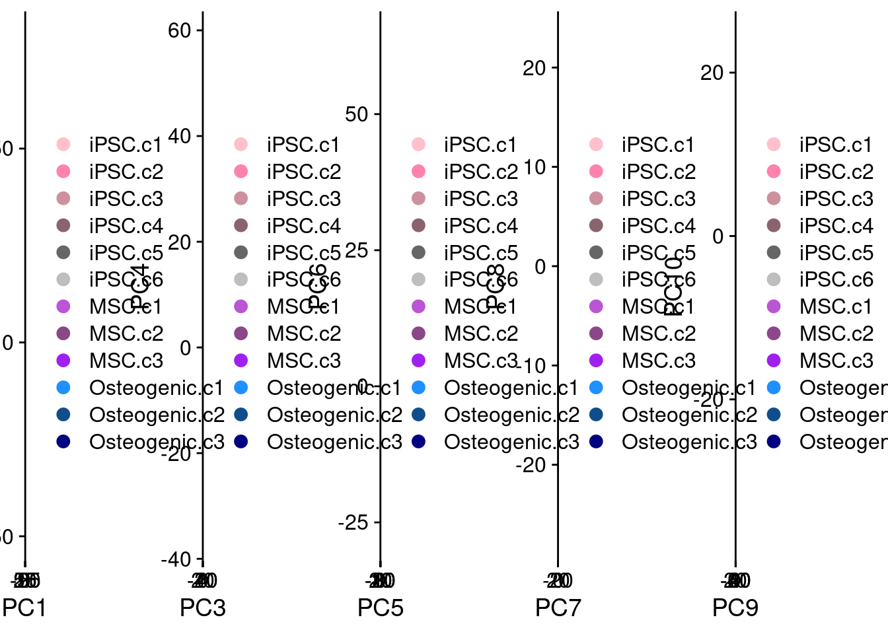
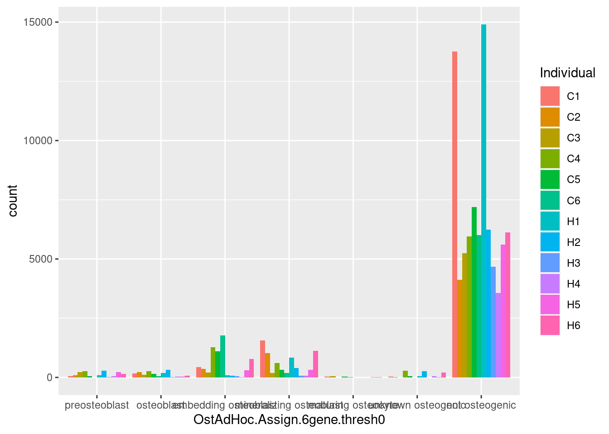

10x-data-classification
Genevieve Housman
May 2021
Last updated: 2021-05-20
Checks: 6 1
Knit directory: human-chimp-skeletal-scRNA/
This reproducible R Markdown analysis was created with workflowr (version 1.6.2). The Checks tab describes the reproducibility checks that were applied when the results were created. The Past versions tab lists the development history.
The R Markdown file has unstaged changes. To know which version of the R Markdown file created these results, you’ll want to first commit it to the Git repo. If you’re still working on the analysis, you can ignore this warning. When you’re finished, you can run wflow_publish to commit the R Markdown file and build the HTML.
Great job! The global environment was empty. Objects defined in the global environment can affect the analysis in your R Markdown file in unknown ways. For reproduciblity it’s best to always run the code in an empty environment.
The command set.seed(20190719) was run prior to running the code in the R Markdown file. Setting a seed ensures that any results that rely on randomness, e.g. subsampling or permutations, are reproducible.
Great job! Recording the operating system, R version, and package versions is critical for reproducibility.
Nice! There were no cached chunks for this analysis, so you can be confident that you successfully produced the results during this run.
Great job! Using relative paths to the files within your workflowr project makes it easier to run your code on other machines.
Great! You are using Git for version control. Tracking code development and connecting the code version to the results is critical for reproducibility.
The results in this page were generated with repository version 325664d. See the Past versions tab to see a history of the changes made to the R Markdown and HTML files.
Note that you need to be careful to ensure that all relevant files for the analysis have been committed to Git prior to generating the results (you can use wflow_publish or wflow_git_commit). workflowr only checks the R Markdown file, but you know if there are other scripts or data files that it depends on. Below is the status of the Git repository when the results were generated:
Ignored files:
Ignored: .Rhistory
Ignored: .Rproj.user/
Untracked files:
Untracked: analysis/10x-plot-enrichment-gom.Rmd
Untracked: analysis/TODO_10x-data-4-classification-t2.Rmd
Untracked: analysis/TODO_10x-data-4-classification.Rmd
Untracked: analysis/TODO_10x-data-4-reclassification-tot.Rmd
Untracked: analysis/TODO_10x-data-5-diffexp.Rmd
Untracked: analysis/TODO_10x-data-6-conservexp.Rmd
Untracked: analysis/TODO_10x-data-6-cormotif-t2.Rmd
Untracked: analysis/TODO_10x-data-6-cormotif-tot.Rmd
Untracked: analysis/TODO_10x-data-6-variance-t2.Rmd
Untracked: analysis/TODO_10x-data-6-variance-tot.Rmd
Untracked: analysis/TODO_10x-data-7-enrichment.Rmd
Untracked: analysis/TODO_10x-data-8-batch-correlation.Rmd
Untracked: analysis/TODO_10x-plot-diffexp.Rmd
Untracked: analysis/TODO_10x-plot-replicate-correlation-t2.Rmd
Untracked: analysis/TODO_10x-plot-replicate-correlation-tot.Rmd
Untracked: analysis/TODO_10x-plot-utf1-tac3.Rmd
Untracked: analysis/TODO_10x-view-batch-effects.Rmd
Untracked: analysis/TODO_10x-view-data-metrics.Rmd
Untracked: analysis/TODO_10x-view-species-assignments.Rmd
Untracked: analysis/TODO_10x-view-validation-data.Rmd
Untracked: analysis/v2/
Untracked: code/FindMarkers.R
Untracked: code/FindMarkers.sh
Untracked: code/FindMarkers_0.1.err
Untracked: code/FindMarkers_0.1.out
Untracked: code/FindMarkers_0.25.err
Untracked: code/FindMarkers_0.25.out
Untracked: code/FindMarkers_0.5.err
Untracked: code/FindMarkers_0.5.out
Untracked: code/FindMarkers_0.75.err
Untracked: code/FindMarkers_0.75.out
Untracked: code/FindMarkers_1.err
Untracked: code/FindMarkers_1.out
Untracked: code/GoM.R
Untracked: code/GoM.sh
Untracked: code/fastTopics.R
Untracked: code/fastTopics.sh
Untracked: code/fastTopicsBC.R
Untracked: code/fastTopicsBC.sh
Untracked: code/fastTopicsBC_3_tot.err
Untracked: code/fastTopicsBC_3_tot.out
Untracked: code/fastTopicsBC_4_tot.err
Untracked: code/fastTopicsBC_4_tot.out
Untracked: code/fastTopicsBC_5_tot.err
Untracked: code/fastTopicsBC_5_tot.out
Untracked: code/fastTopicsBC_6_tot.err
Untracked: code/fastTopicsBC_6_tot.out
Untracked: code/fastTopicsBC_7_tot.err
Untracked: code/fastTopicsBC_7_tot.out
Untracked: code/fastTopicsSpp.R
Untracked: code/fastTopicsSpp.sh
Untracked: code/fastTopicsSppBC.R
Untracked: code/fastTopicsSppBC.sh
Untracked: code/fastTopicsSppBC_3_tot.err
Untracked: code/fastTopicsSppBC_3_tot.out
Untracked: code/fastTopicsSppBC_4_tot.err
Untracked: code/fastTopicsSppBC_4_tot.out
Untracked: code/fastTopicsSppBC_5_tot.err
Untracked: code/fastTopicsSppBC_5_tot.out
Untracked: code/fastTopicsSppBC_6_tot.err
Untracked: code/fastTopicsSppBC_6_tot.out
Untracked: code/fastTopicsSppBC_7_tot.err
Untracked: code/fastTopicsSppBC_7_tot.out
Untracked: code/fastTopicsSpp_3_tot.err
Untracked: code/fastTopicsSpp_3_tot.out
Untracked: code/fastTopicsSpp_4_tot.err
Untracked: code/fastTopicsSpp_4_tot.out
Untracked: code/fastTopicsSpp_5_tot.err
Untracked: code/fastTopicsSpp_5_tot.out
Untracked: code/fastTopicsSpp_6_tot.err
Untracked: code/fastTopicsSpp_6_tot.out
Untracked: code/fastTopicsSpp_7_tot.err
Untracked: code/fastTopicsSpp_7_tot.out
Untracked: code/fastTopics_3_tot.err
Untracked: code/fastTopics_3_tot.out
Untracked: code/fastTopics_4_tot.err
Untracked: code/fastTopics_4_tot.out
Untracked: code/fastTopics_5_tot.err
Untracked: code/fastTopics_5_tot.out
Untracked: code/fastTopics_6_tot.err
Untracked: code/fastTopics_6_tot.out
Untracked: code/fastTopics_7_tot.err
Untracked: code/fastTopics_7_tot.out
Untracked: code/v2/
Untracked: data/HumanPrimaryCellAtlasData-SingleR
Untracked: data/HumanPrimaryCellAtlasDetails-SingleR.csv
Untracked: data/HumanPrimaryCellAtlasLabels-SingleR.csv
Untracked: data/alizarin-red-quant-total.csv
Untracked: data/cell_atlas_ref_panel
Untracked: data/cellranger-data-full/
Untracked: data/corrmatrix.ost
Untracked: data/de-data/
Untracked: data/facs-MSC-collection-summary-sample-avg.csv
Untracked: data/facs-MSC-collection-summary-species-avg.csv
Untracked: data/facs-MSC-collection-summary-total.csv
Untracked: data/gom-data/
Untracked: data/oil-red-quant-total.csv
Untracked: data/scrna-batch-reformat.csv
Untracked: data/scrna-batch.csv
Untracked: output/data-qc-post-subsets-batchcor.pdf
Untracked: output/data-qc-post-subsets-batchviz.pdf
Untracked: output/data-qc-postfilterC-subsets-batchcor.pdf
Untracked: output/data-qc-postfilterC-subsets-batchviz.pdf
Untracked: output/data-qc-postfilterC-subsets-int19k-batchcor.pdf
Untracked: output/data-qc-postfilterC-subsets-int19k-batchviz.pdf
Untracked: output/data-qc-postfilterC-subsets-int19k.reg-batchcor.pdf
Untracked: output/data-qc-postfilterC-subsets-int19k.reg-batchviz.pdf
Untracked: output/data-qc-postfilterC-subsets-intNo0-batchcor.pdf
Untracked: output/data-qc-postfilterC-subsets-intNo0-batchviz.pdf
Untracked: output/data-qc-postfilterC-subsets-intNo0.reg-batchcor.pdf
Untracked: output/data-qc-postfilterC-subsets-intNo0.reg-batchviz.pdf
Untracked: output/data-qc-postfilterC-subsets-merge-batchcor.pdf
Untracked: output/data-qc-postfilterC-subsets-merge-batchviz.pdf
Untracked: output/data-qc-postfilterC.pdf
Untracked: output/data-qc-postfilterL-subsets-batchcor.pdf
Untracked: output/data-qc-postfilterL-subsets-batchviz.pdf
Untracked: output/data-qc-postfilterL-subsets-intNo0.reg-batchcor.pdf
Untracked: output/data-qc-postfilterL-subsets-intNo0.reg-batchviz.pdf
Untracked: output/data-qc-postfilterL-subsets-merge-batchcor.pdf
Untracked: output/data-qc-postfilterL-subsets-merge-batchviz.pdf
Untracked: output/data-qc-postfilterL.pdf
Untracked: output/data-qc-prefilter.pdf
Untracked: output/markers0.05-I.data.filterC.log.indv-cell.intNo0.reg-tot.rds
Untracked: output/markers0.05-M.data.filterC.log.indv-cell.intNo0.reg-tot.rds
Untracked: output/markers0.05-O.data.filterC.log.indv-cell.intNo0.reg-tot.rds
Untracked: output/markers0.05.data.filterC.log.indv-cell.intNo0.reg-tot.rds
Untracked: output/markers0.1.data.filterC.log.indv-cell.intNo0.reg-tot.rds
Untracked: output/markers0.25.data.filterC.log.indv-cell.intNo0.reg-tot.rds
Untracked: output/markers0.5.data.filterC.log.indv-cell.intNo0.reg-tot.rds
Untracked: output/markers0.75.data.filterC.log.indv-cell.intNo0.reg-tot.rds
Untracked: output/markers1.data.filterC.log.indv-cell.intNo0.reg-tot.rds
Untracked: output/markersStage-I.data.filterC.log.indv-cell.intNo0.reg-tot.rds
Untracked: output/markersStage-M.data.filterC.log.indv-cell.intNo0.reg-tot.rds
Untracked: output/markersStage-O.data.filterC.log.indv-cell.intNo0.reg-tot.rds
Untracked: output/v1/
Untracked: output/v2/
Unstaged changes:
Deleted: analysis/10x-data-4-classification-t2.Rmd
Modified: analysis/10x-data-4-classification-tot.Rmd
Deleted: analysis/10x-data-4-classification.Rmd
Deleted: analysis/10x-data-5-diffexp.Rmd
Deleted: analysis/10x-data-6-conservexp.Rmd
Deleted: analysis/10x-data-6-cormotif-t2.Rmd
Deleted: analysis/10x-data-6-cormotif-tot.Rmd
Deleted: analysis/10x-data-6-variance-t2.Rmd
Deleted: analysis/10x-data-6-variance-tot.Rmd
Deleted: analysis/10x-data-7-enrichment.Rmd
Deleted: analysis/10x-data-8-batch-correlation.Rmd
Modified: analysis/10x-plot-classification-adhoc.Rmd
Modified: analysis/10x-plot-classification.Rmd
Deleted: analysis/10x-plot-diffexp.Rmd
Deleted: analysis/10x-plot-replicate-correlation-t2.Rmd
Deleted: analysis/10x-plot-replicate-correlation-tot.Rmd
Deleted: analysis/10x-plot-utf1-tac3.Rmd
Deleted: analysis/10x-view-batch-effects.Rmd
Deleted: analysis/10x-view-data-metrics.Rmd
Deleted: analysis/10x-view-species-assignments.Rmd
Deleted: analysis/10x-view-validation-data.Rmd
Deleted: analysis/asbmr2020-plots.Rmd
Deleted: analysis/ashg2020-plots.Rmd
Modified: analysis/index.Rmd
Deleted: analysis/temp-code.Rmd
Deleted: analysis/v1/index.Rmd
Deleted: analysis/v1/license.Rmd
Modified: code/DEdream.R
Deleted: code/DEdream_totcell.filter.pch20.fml1.nofc.bh_adhoc.err
Deleted: code/DEdream_totcell.filter.pch20.fml1.nofc.bh_adhoc.out
Deleted: code/DEdream_totcell.filter.pch20.fml1.nofc.bh_cluster.err
Deleted: code/DEdream_totcell.filter.pch20.fml1.nofc.bh_cluster.out
Deleted: code/DEdream_totcell.filter.pch20.fml1.nofc.bh_ostadhoc.err
Deleted: code/DEdream_totcell.filter.pch20.fml1.nofc.bh_ostadhoc.out
Deleted: code/DEdream_totcell.filter.pch20.fml1.nofc.bh_stage.err
Deleted: code/DEdream_totcell.filter.pch20.fml1.nofc.bh_stage.out
Deleted: code/DEdream_totcell.filter.pch20.fml2.nofc.bh_adhoc.err
Deleted: code/DEdream_totcell.filter.pch20.fml2.nofc.bh_adhoc.out
Deleted: code/DEdream_totcell.filter.pch20.fml2.nofc.bh_cluster.err
Deleted: code/DEdream_totcell.filter.pch20.fml2.nofc.bh_cluster.out
Deleted: code/DEdream_totcell.filter.pch20.fml2.nofc.bh_ostadhoc.err
Deleted: code/DEdream_totcell.filter.pch20.fml2.nofc.bh_ostadhoc.out
Deleted: code/DEdream_totcell.filter.pch20.fml2.nofc.bh_stage.err
Deleted: code/DEdream_totcell.filter.pch20.fml2.nofc.bh_stage.out
Deleted: code/DEdream_totcell.filter.pch20.fml3.nofc.bh_adhoc.err
Deleted: code/DEdream_totcell.filter.pch20.fml3.nofc.bh_adhoc.out
Deleted: code/DEdream_totcell.filter.pch20.fml3.nofc.bh_cluster.err
Deleted: code/DEdream_totcell.filter.pch20.fml3.nofc.bh_cluster.out
Deleted: code/DEdream_totcell.filter.pch20.fml3.nofc.bh_ostadhoc.err
Deleted: code/DEdream_totcell.filter.pch20.fml3.nofc.bh_ostadhoc.out
Deleted: code/DEdream_totcell.filter.pch20.fml3.nofc.bh_stage.err
Deleted: code/DEdream_totcell.filter.pch20.fml3.nofc.bh_stage.out
Deleted: code/DEdream_totcell.filter.pch20.fml4.nofc.bh_adhoc.err
Deleted: code/DEdream_totcell.filter.pch20.fml4.nofc.bh_adhoc.out
Deleted: code/DEdream_totcell.filter.pch20.fml4.nofc.bh_cluster.err
Deleted: code/DEdream_totcell.filter.pch20.fml4.nofc.bh_cluster.out
Deleted: code/DEdream_totcell.filter.pch20.fml4.nofc.bh_ostadhoc.err
Deleted: code/DEdream_totcell.filter.pch20.fml4.nofc.bh_ostadhoc.out
Deleted: code/DEdream_totcell.filter.pch20.fml4.nofc.bh_stage.err
Deleted: code/DEdream_totcell.filter.pch20.fml4.nofc.bh_stage.out
Deleted: code/DEdream_totcell.filter.pch20.fml5.nofc.bh_adhoc.err
Deleted: code/DEdream_totcell.filter.pch20.fml5.nofc.bh_adhoc.out
Deleted: code/DEdream_totcell.filter.pch20.fml5.nofc.bh_cluster.err
Deleted: code/DEdream_totcell.filter.pch20.fml5.nofc.bh_cluster.out
Deleted: code/DEdream_totcell.filter.pch20.fml5.nofc.bh_ostadhoc.err
Deleted: code/DEdream_totcell.filter.pch20.fml5.nofc.bh_ostadhoc.out
Deleted: code/DEdream_totcell.filter.pch20.fml5.nofc.bh_stage.err
Deleted: code/DEdream_totcell.filter.pch20.fml5.nofc.bh_stage.out
Deleted: code/DEdream_totcell.keepRep1.filter.pch20.fml1.nofc.bh_adhoc.err
Deleted: code/DEdream_totcell.keepRep1.filter.pch20.fml1.nofc.bh_adhoc.out
Deleted: code/DEdream_totcell.keepRep1.filter.pch20.fml1.nofc.bh_cluster.err
Deleted: code/DEdream_totcell.keepRep1.filter.pch20.fml1.nofc.bh_cluster.out
Deleted: code/DEdream_totcell.keepRep1.filter.pch20.fml1.nofc.bh_ostadhoc.err
Deleted: code/DEdream_totcell.keepRep1.filter.pch20.fml1.nofc.bh_ostadhoc.out
Deleted: code/DEdream_totcell.keepRep1.filter.pch20.fml1.nofc.bh_stage.err
Deleted: code/DEdream_totcell.keepRep1.filter.pch20.fml1.nofc.bh_stage.out
Deleted: code/DEdream_totcell.keepRep1.filter.pch20.fml5.nofc.bh_adhoc.err
Deleted: code/DEdream_totcell.keepRep1.filter.pch20.fml5.nofc.bh_adhoc.out
Deleted: code/DEdream_totcell.keepRep1.filter.pch20.fml5.nofc.bh_cluster.err
Deleted: code/DEdream_totcell.keepRep1.filter.pch20.fml5.nofc.bh_cluster.out
Deleted: code/DEdream_totcell.keepRep1.filter.pch20.fml5.nofc.bh_ostadhoc.err
Deleted: code/DEdream_totcell.keepRep1.filter.pch20.fml5.nofc.bh_ostadhoc.out
Deleted: code/DEdream_totcell.keepRep1.filter.pch20.fml5.nofc.bh_stage.err
Deleted: code/DEdream_totcell.keepRep1.filter.pch20.fml5.nofc.bh_stage.out
Deleted: code/DEdream_totcell.keepRep2.filter.pch20.fml1.nofc.bh_FALSE.out
Deleted: code/DEdream_totcell.keepRep2.filter.pch20.fml1.nofc.bh_adhoc.err
Deleted: code/DEdream_totcell.keepRep2.filter.pch20.fml1.nofc.bh_adhoc.out
Deleted: code/DEdream_totcell.keepRep2.filter.pch20.fml1.nofc.bh_cluster.err
Deleted: code/DEdream_totcell.keepRep2.filter.pch20.fml1.nofc.bh_cluster.out
Deleted: code/DEdream_totcell.keepRep2.filter.pch20.fml1.nofc.bh_ostadhoc.err
Deleted: code/DEdream_totcell.keepRep2.filter.pch20.fml1.nofc.bh_ostadhoc.out
Deleted: code/DEdream_totcell.keepRep2.filter.pch20.fml1.nofc.bh_stage.err
Deleted: code/DEdream_totcell.keepRep2.filter.pch20.fml1.nofc.bh_stage.out
Deleted: code/DEdream_totcell.keepRep2.filter.pch20.fml5.nofc.bh_adhoc.err
Deleted: code/DEdream_totcell.keepRep2.filter.pch20.fml5.nofc.bh_adhoc.out
Deleted: code/DEdream_totcell.keepRep2.filter.pch20.fml5.nofc.bh_cluster.err
Deleted: code/DEdream_totcell.keepRep2.filter.pch20.fml5.nofc.bh_cluster.out
Deleted: code/DEdream_totcell.keepRep2.filter.pch20.fml5.nofc.bh_ostadhoc.err
Deleted: code/DEdream_totcell.keepRep2.filter.pch20.fml5.nofc.bh_ostadhoc.out
Deleted: code/DEdream_totcell.keepRep2.filter.pch20.fml5.nofc.bh_stage.err
Deleted: code/DEdream_totcell.keepRep2.filter.pch20.fml5.nofc.bh_stage.out
Deleted: code/DEdream_totcell.pseudo.nofilter.fml1.nofc.bh_adhoc.err
Deleted: code/DEdream_totcell.pseudo.nofilter.fml1.nofc.bh_adhoc.out
Deleted: code/DEdream_totcell.pseudo.nofilter.fml1.nofc.bh_cluster.err
Deleted: code/DEdream_totcell.pseudo.nofilter.fml1.nofc.bh_cluster.out
Deleted: code/DEdream_totcell.pseudo.nofilter.fml1.nofc.bh_ostadhoc.err
Deleted: code/DEdream_totcell.pseudo.nofilter.fml1.nofc.bh_ostadhoc.out
Deleted: code/DEdream_totcell.pseudo.nofilter.fml1.nofc.bh_stage.err
Deleted: code/DEdream_totcell.pseudo.nofilter.fml1.nofc.bh_stage.out
Deleted: code/DEdream_totcell.subNum.filter.pch20.fml1.nofc.bh_adhoc.err
Deleted: code/DEdream_totcell.subNum.filter.pch20.fml1.nofc.bh_adhoc.out
Deleted: code/DEdream_totcell.subNum.filter.pch20.fml1.nofc.bh_cluster.err
Deleted: code/DEdream_totcell.subNum.filter.pch20.fml1.nofc.bh_cluster.out
Deleted: code/DEdream_totcell.subNum.filter.pch20.fml1.nofc.bh_ostadhoc.err
Deleted: code/DEdream_totcell.subNum.filter.pch20.fml1.nofc.bh_ostadhoc.out
Deleted: code/DEdream_totcell.subNum.filter.pch20.fml1.nofc.bh_stage.err
Deleted: code/DEdream_totcell.subNum.filter.pch20.fml1.nofc.bh_stage.out
Deleted: code/DEdream_totcell.subNum.filter.pch20.fml5.nofc.bh_adhoc.err
Deleted: code/DEdream_totcell.subNum.filter.pch20.fml5.nofc.bh_adhoc.out
Deleted: code/DEdream_totcell.subNum.filter.pch20.fml5.nofc.bh_cluster.err
Deleted: code/DEdream_totcell.subNum.filter.pch20.fml5.nofc.bh_cluster.out
Deleted: code/DEdream_totcell.subNum.filter.pch20.fml5.nofc.bh_ostadhoc.err
Deleted: code/DEdream_totcell.subNum.filter.pch20.fml5.nofc.bh_ostadhoc.out
Deleted: code/DEdream_totcell.subNum.filter.pch20.fml5.nofc.bh_stage.err
Deleted: code/DEdream_totcell.subNum.filter.pch20.fml5.nofc.bh_stage.out
Modified: code/DEdreamsubset.R
Deleted: code/DEedgeR_totcell.filter.pch20.fc.bh_adhoc.err
Deleted: code/DEedgeR_totcell.filter.pch20.fc.bh_adhoc.out
Deleted: code/DEedgeR_totcell.filter.pch20.fc.bh_cluster.err
Deleted: code/DEedgeR_totcell.filter.pch20.fc.bh_cluster.out
Deleted: code/DEedgeR_totcell.filter.pch20.fc.bh_ostadhoc.err
Deleted: code/DEedgeR_totcell.filter.pch20.fc.bh_ostadhoc.out
Deleted: code/DEedgeR_totcell.filter.pch20.fc.bh_stage.err
Deleted: code/DEedgeR_totcell.filter.pch20.fc.bh_stage.out
Deleted: code/DEedgeR_totcell.keepRep1.filter.pch20.fc.bh_adhoc.err
Deleted: code/DEedgeR_totcell.keepRep1.filter.pch20.fc.bh_adhoc.out
Deleted: code/DEedgeR_totcell.keepRep1.filter.pch20.fc.bh_cluster.err
Deleted: code/DEedgeR_totcell.keepRep1.filter.pch20.fc.bh_cluster.out
Deleted: code/DEedgeR_totcell.keepRep1.filter.pch20.fc.bh_ostadhoc.err
Deleted: code/DEedgeR_totcell.keepRep1.filter.pch20.fc.bh_ostadhoc.out
Deleted: code/DEedgeR_totcell.keepRep1.filter.pch20.fc.bh_stage.err
Deleted: code/DEedgeR_totcell.keepRep1.filter.pch20.fc.bh_stage.out
Deleted: code/DEedgeR_totcell.keepRep2.filter.pch20.fc.bh_adhoc.err
Deleted: code/DEedgeR_totcell.keepRep2.filter.pch20.fc.bh_adhoc.out
Deleted: code/DEedgeR_totcell.keepRep2.filter.pch20.fc.bh_cluster.err
Deleted: code/DEedgeR_totcell.keepRep2.filter.pch20.fc.bh_cluster.out
Deleted: code/DEedgeR_totcell.keepRep2.filter.pch20.fc.bh_ostadhoc.err
Deleted: code/DEedgeR_totcell.keepRep2.filter.pch20.fc.bh_ostadhoc.out
Deleted: code/DEedgeR_totcell.keepRep2.filter.pch20.fc.bh_stage.err
Deleted: code/DEedgeR_totcell.keepRep2.filter.pch20.fc.bh_stage.out
Deleted: code/DEedgeR_totcell.subNum.filter.pch20.fc.bh_adhoc.err
Deleted: code/DEedgeR_totcell.subNum.filter.pch20.fc.bh_adhoc.out
Deleted: code/DEedgeR_totcell.subNum.filter.pch20.fc.bh_cluster.err
Deleted: code/DEedgeR_totcell.subNum.filter.pch20.fc.bh_cluster.out
Deleted: code/DEedgeR_totcell.subNum.filter.pch20.fc.bh_ostadhoc.err
Deleted: code/DEedgeR_totcell.subNum.filter.pch20.fc.bh_ostadhoc.out
Deleted: code/DEedgeR_totcell.subNum.filter.pch20.fc.bh_stage.err
Deleted: code/DEedgeR_totcell.subNum.filter.pch20.fc.bh_stage.out
Note that any generated files, e.g. HTML, png, CSS, etc., are not included in this status report because it is ok for generated content to have uncommitted changes.
These are the previous versions of the repository in which changes were made to the R Markdown (analysis/10x-data-4-classification-tot.Rmd) and HTML (docs/10x-data-4-classification-tot.html) files. If you’ve configured a remote Git repository (see ?wflow_git_remote), click on the hyperlinks in the table below to view the files as they were in that past version.
| File | Version | Author | Date | Message |
|---|---|---|---|---|
| Rmd | 325664d | Genevieve Housman | 2021-05-18 | fixed ad hoc gene 4 |
| Rmd | d0f47b3 | Genevieve Housman | 2021-05-13 | updated classifications |
| Rmd | e6ab6eb | Genevieve Housman | 2020-10-05 | updated cormotif |
| Rmd | 46b9c5a | Genevieve Housman | 2020-09-28 | Updated utf1-tac3 code |
| Rmd | d0731f9 | Genevieve Housman | 2020-09-26 | Finalized cell assignment scripts |
| Rmd | 83481d1 | Genevieve Housman | 2020-09-26 | Updated tot cell assignments |
| Rmd | 2b6d922 | Genevieve Housman | 2020-09-23 | Updated cell classifications for t2 |
| Rmd | 0373ccf | Genevieve Housman | 2020-09-22 | Updated variance and cormotif analyses |
| Rmd | 750156c | Genevieve Housman | 2020-09-20 | Updated DE analyses |
10X Data Cellranger Analysis - Cell Classification
Define and assign cell type classifications. Three methods considered:
- unsupervised clustering (Seurat)
- unsupervised topic modeling (Grades of Membership analysis)
- ad hoc assignments (using known marker gene expression patterns)
#Load libraries
library(Seurat)
library(dplyr)
library(stringi)
library(stringr)
library(ggplot2)
library(pheatmap)
library(grid)
library(gbm)
library(colorspace)
library(RColorBrewer)
library(tidyr)
library(UpSetR)
library(reshape2)
library(CountClust)
library(classtpx)
library(fastTopics)#Load data
#data integrated across individuals - total (conservative cell filter + non-zero genes + regress out UMI/mito)
scrna <- "./data/cellranger-data-full/data.filterC.log.indv-cell.intNo0.reg-tot.rds"
data <- readRDS(scrna)#Load data
#data integrated across individuals - total (conservative cell filter + non-zero genes + regress out UMI/mito)
scrna <- "./data/cellranger-data-full/data.filterC.log.indv-cell.intNo0.reg-tot.assign.rds"
data <- readRDS(scrna)
dataAn object of class Seurat
37859 features across 101000 samples within 2 assays
Active assay: integrated (18482 features)
1 other assay present: RNA
2 dimensional reductions calculated: pca, umaphead(data@meta.data) orig.ident nCount_RNA nFeature_RNA Species
H1.I_AAACCCAAGCACCCAC SeuratProject 20121 4426 Human
H1.I_AAACCCACACAAGTTC SeuratProject 44970 6385 Human
H1.I_AAACCCAGTTATGGTC SeuratProject 24631 4920 Human
H1.I_AAACCCATCGTGGAAG SeuratProject 33783 5070 Human
H1.I_AAACCCATCTCGAGTA SeuratProject 16457 3885 Human
H1.I_AAACGAAAGGATCATA SeuratProject 27102 5232 Human
percent.mt Collection Cell.Type Pair Individual
H1.I_AAACCCAAGCACCCAC 5.109090 1 iPSC H1+C1 H1
H1.I_AAACCCACACAAGTTC 7.011341 1 iPSC H1+C1 H1
H1.I_AAACCCAGTTATGGTC 5.736673 1 iPSC H1+C1 H1
H1.I_AAACCCATCGTGGAAG 6.772637 1 iPSC H1+C1 H1
H1.I_AAACCCATCTCGAGTA 5.231816 1 iPSC H1+C1 H1
H1.I_AAACGAAAGGATCATA 6.254151 1 iPSC H1+C1 H1
Replicate MSCmedia Sample Sex Age DateCollection
H1.I_AAACCCAAGCACCCAC 1 3B H1-I M 22 6/3/2019
H1.I_AAACCCACACAAGTTC 1 3B H1-I M 22 6/3/2019
H1.I_AAACCCAGTTATGGTC 1 3B H1-I M 22 6/3/2019
H1.I_AAACCCATCGTGGAAG 1 3B H1-I M 22 6/3/2019
H1.I_AAACCCATCTCGAGTA 1 3B H1-I M 22 6/3/2019
H1.I_AAACGAAAGGATCATA 1 3B H1-I M 22 6/3/2019
Number6W PrewashCount PrewashViability PostwashCount
H1.I_AAACCCAAGCACCCAC 3 9228000 0.89 7e+05
H1.I_AAACCCACACAAGTTC 3 9228000 0.89 7e+05
H1.I_AAACCCAGTTATGGTC 3 9228000 0.89 7e+05
H1.I_AAACCCATCGTGGAAG 3 9228000 0.89 7e+05
H1.I_AAACCCATCTCGAGTA 3 9228000 0.89 7e+05
H1.I_AAACGAAAGGATCATA 3 9228000 0.89 7e+05
PostwashViability PostmixCount PostmixViability
H1.I_AAACCCAAGCACCCAC 0.9 650000 0.9
H1.I_AAACCCACACAAGTTC 0.9 650000 0.9
H1.I_AAACCCAGTTATGGTC 0.9 650000 0.9
H1.I_AAACCCATCGTGGAAG 0.9 650000 0.9
H1.I_AAACCCATCTCGAGTA 0.9 650000 0.9
H1.I_AAACGAAAGGATCATA 0.9 650000 0.9
DatecDNA DateLibrary SequencingBatch CD90_Control
H1.I_AAACCCAAGCACCCAC 6/3/2019 6/10/2019 1 0.0021
H1.I_AAACCCACACAAGTTC 6/3/2019 6/10/2019 1 0.0021
H1.I_AAACCCAGTTATGGTC 6/3/2019 6/10/2019 1 0.0021
H1.I_AAACCCATCGTGGAAG 6/3/2019 6/10/2019 1 0.0021
H1.I_AAACCCATCTCGAGTA 6/3/2019 6/10/2019 1 0.0021
H1.I_AAACGAAAGGATCATA 6/3/2019 6/10/2019 1 0.0021
CD73_Control CD105_Control
H1.I_AAACCCAAGCACCCAC 0.0025 0.001166667
H1.I_AAACCCACACAAGTTC 0.0025 0.001166667
H1.I_AAACCCAGTTATGGTC 0.0025 0.001166667
H1.I_AAACCCATCGTGGAAG 0.0025 0.001166667
H1.I_AAACCCATCTCGAGTA 0.0025 0.001166667
H1.I_AAACGAAAGGATCATA 0.0025 0.001166667
CD45.CD34.CD11b.CD19.HLA.DR_Control CD90
H1.I_AAACCCAAGCACCCAC 0.0017 0.6572
H1.I_AAACCCACACAAGTTC 0.0017 0.6572
H1.I_AAACCCAGTTATGGTC 0.0017 0.6572
H1.I_AAACCCATCGTGGAAG 0.0017 0.6572
H1.I_AAACCCATCTCGAGTA 0.0017 0.6572
H1.I_AAACGAAAGGATCATA 0.0017 0.6572
CD73 CD105 CD45.CD34.CD11b.CD19.HLA.DR
H1.I_AAACCCAAGCACCCAC 0.001266667 0.0007333333 0.001966667
H1.I_AAACCCACACAAGTTC 0.001266667 0.0007333333 0.001966667
H1.I_AAACCCAGTTATGGTC 0.001266667 0.0007333333 0.001966667
H1.I_AAACCCATCGTGGAAG 0.001266667 0.0007333333 0.001966667
H1.I_AAACCCATCTCGAGTA 0.001266667 0.0007333333 0.001966667
H1.I_AAACGAAAGGATCATA 0.001266667 0.0007333333 0.001966667
Alizarin OilRed Stage Complexity S.Score
H1.I_AAACCCAAGCACCCAC NA NA Time 0 0.6576382 -0.079583719
H1.I_AAACCCACACAAGTTC NA NA Time 0 0.8477620 -0.051582337
H1.I_AAACCCAGTTATGGTC NA NA Time 0 0.6995169 0.006639814
H1.I_AAACCCATCGTGGAAG NA NA Time 0 0.8236903 0.095840891
H1.I_AAACCCATCTCGAGTA NA NA Time 0 0.6269596 0.113270570
H1.I_AAACGAAAGGATCATA NA NA Time 0 0.7143336 -0.067822836
G2M.Score Phase integrated_snn_res.1
H1.I_AAACCCAAGCACCCAC -0.053363880 G1 8
H1.I_AAACCCACACAAGTTC -0.067659885 G1 17
H1.I_AAACCCAGTTATGGTC 0.202169108 G2M 4
H1.I_AAACCCATCGTGGAAG -0.196044816 S 11
H1.I_AAACCCATCTCGAGTA -0.180149719 S 1
H1.I_AAACGAAAGGATCATA 0.004518702 G2M 4
seurat_clusters integrated_snn_res.0.75
H1.I_AAACCCAAGCACCCAC 1 1
H1.I_AAACCCACACAAGTTC 1 7
H1.I_AAACCCAGTTATGGTC 1 3
H1.I_AAACCCATCGTGGAAG 1 7
H1.I_AAACCCATCTCGAGTA 1 1
H1.I_AAACGAAAGGATCATA 1 3
integrated_snn_res.0.5 integrated_snn_res.0.25
H1.I_AAACCCAAGCACCCAC 2 2
H1.I_AAACCCACACAAGTTC 9 3
H1.I_AAACCCAGTTATGGTC 3 3
H1.I_AAACCCATCGTGGAAG 9 2
H1.I_AAACCCATCTCGAGTA 2 2
H1.I_AAACGAAAGGATCATA 3 3
integrated_snn_res.0.1 integrated_snn_res.0.05
H1.I_AAACCCAAGCACCCAC 0 1
H1.I_AAACCCACACAAGTTC 0 1
H1.I_AAACCCAGTTATGGTC 0 1
H1.I_AAACCCATCGTGGAAG 0 1
H1.I_AAACCCATCTCGAGTA 0 1
H1.I_AAACGAAAGGATCATA 0 1
Cluster0.05 Cluster0.25 Cluster0.50
H1.I_AAACCCAAGCACCCAC iPSC.c1 iPSC.c1 iPSC.c1
H1.I_AAACCCACACAAGTTC iPSC.c1 iPSC.c2 iPSC.c3
H1.I_AAACCCAGTTATGGTC iPSC.c1 iPSC.c2 iPSC.c2
H1.I_AAACCCATCGTGGAAG iPSC.c1 iPSC.c1 iPSC.c3
H1.I_AAACCCATCTCGAGTA iPSC.c1 iPSC.c1 iPSC.c1
H1.I_AAACGAAAGGATCATA iPSC.c1 iPSC.c2 iPSC.c2
AdHoc.Assign.thresh0 AdHoc.Assign.threshN0.01
H1.I_AAACCCAAGCACCCAC iPSC iPSC
H1.I_AAACCCACACAAGTTC iPSC iPSC
H1.I_AAACCCAGTTATGGTC iPSC iPSC
H1.I_AAACCCATCGTGGAAG iPSC iPSC
H1.I_AAACCCATCTCGAGTA iPSC iPSC
H1.I_AAACGAAAGGATCATA iPSC iPSC
AdHoc.Assign.threshN0.05 AdHoc.Assign.threshN0.1
H1.I_AAACCCAAGCACCCAC other other
H1.I_AAACCCACACAAGTTC iPSC iPSC
H1.I_AAACCCAGTTATGGTC iPSC iPSC
H1.I_AAACCCATCGTGGAAG iPSC iPSC
H1.I_AAACCCATCTCGAGTA iPSC iPSC
H1.I_AAACGAAAGGATCATA iPSC iPSC
AdHoc.Assign.thresh0.01 AdHoc.Assign.thresh0.05
H1.I_AAACCCAAGCACCCAC iPSC iPSC
H1.I_AAACCCACACAAGTTC iPSC iPSC
H1.I_AAACCCAGTTATGGTC iPSC iPSC
H1.I_AAACCCATCGTGGAAG iPSC iPSC
H1.I_AAACCCATCTCGAGTA iPSC iPSC
H1.I_AAACGAAAGGATCATA iPSC iPSC
AdHoc.Assign.thresh0.1
H1.I_AAACCCAAGCACCCAC iPSC
H1.I_AAACCCACACAAGTTC iPSC
H1.I_AAACCCAGTTATGGTC iPSC
H1.I_AAACCCATCGTGGAAG iPSC
H1.I_AAACCCATCTCGAGTA iPSC
H1.I_AAACGAAAGGATCATA iPSC
OstAdHoc.Assign.x.8gene.thresh0
H1.I_AAACCCAAGCACCCAC not osteogenic
H1.I_AAACCCACACAAGTTC not osteogenic
H1.I_AAACCCAGTTATGGTC not osteogenic
H1.I_AAACCCATCGTGGAAG not osteogenic
H1.I_AAACCCATCTCGAGTA not osteogenic
H1.I_AAACGAAAGGATCATA not osteogenic
OstAdHoc.Assign.8gene.thresh0
H1.I_AAACCCAAGCACCCAC not osteogenic
H1.I_AAACCCACACAAGTTC not osteogenic
H1.I_AAACCCAGTTATGGTC not osteogenic
H1.I_AAACCCATCGTGGAAG not osteogenic
H1.I_AAACCCATCTCGAGTA not osteogenic
H1.I_AAACGAAAGGATCATA not osteogenic
OstAdHoc.Assign.x.8gene.threshN0.01
H1.I_AAACCCAAGCACCCAC not osteogenic
H1.I_AAACCCACACAAGTTC not osteogenic
H1.I_AAACCCAGTTATGGTC not osteogenic
H1.I_AAACCCATCGTGGAAG not osteogenic
H1.I_AAACCCATCTCGAGTA not osteogenic
H1.I_AAACGAAAGGATCATA not osteogenic
OstAdHoc.Assign.8gene.threshN0.01
H1.I_AAACCCAAGCACCCAC not osteogenic
H1.I_AAACCCACACAAGTTC not osteogenic
H1.I_AAACCCAGTTATGGTC not osteogenic
H1.I_AAACCCATCGTGGAAG not osteogenic
H1.I_AAACCCATCTCGAGTA not osteogenic
H1.I_AAACGAAAGGATCATA not osteogenic
OstAdHoc.Assign.x.8gene.thresh0.01
H1.I_AAACCCAAGCACCCAC not osteogenic
H1.I_AAACCCACACAAGTTC not osteogenic
H1.I_AAACCCAGTTATGGTC not osteogenic
H1.I_AAACCCATCGTGGAAG not osteogenic
H1.I_AAACCCATCTCGAGTA not osteogenic
H1.I_AAACGAAAGGATCATA not osteogenic
OstAdHoc.Assign.8gene.thresh0.01
H1.I_AAACCCAAGCACCCAC not osteogenic
H1.I_AAACCCACACAAGTTC not osteogenic
H1.I_AAACCCAGTTATGGTC not osteogenic
H1.I_AAACCCATCGTGGAAG not osteogenic
H1.I_AAACCCATCTCGAGTA not osteogenic
H1.I_AAACGAAAGGATCATA not osteogenic
OstAdHoc.Assign.x.6gene.thresh0
H1.I_AAACCCAAGCACCCAC not osteogenic
H1.I_AAACCCACACAAGTTC not osteogenic
H1.I_AAACCCAGTTATGGTC not osteogenic
H1.I_AAACCCATCGTGGAAG not osteogenic
H1.I_AAACCCATCTCGAGTA not osteogenic
H1.I_AAACGAAAGGATCATA not osteogenic
OstAdHoc.Assign.6gene.thresh0
H1.I_AAACCCAAGCACCCAC not osteogenic
H1.I_AAACCCACACAAGTTC not osteogenic
H1.I_AAACCCAGTTATGGTC not osteogenic
H1.I_AAACCCATCGTGGAAG not osteogenic
H1.I_AAACCCATCTCGAGTA not osteogenic
H1.I_AAACGAAAGGATCATA not osteogenic
OstAdHoc.Assign.x.6gene.threshN0.01
H1.I_AAACCCAAGCACCCAC not osteogenic
H1.I_AAACCCACACAAGTTC not osteogenic
H1.I_AAACCCAGTTATGGTC not osteogenic
H1.I_AAACCCATCGTGGAAG not osteogenic
H1.I_AAACCCATCTCGAGTA not osteogenic
H1.I_AAACGAAAGGATCATA not osteogenic
OstAdHoc.Assign.6gene.threshN0.01
H1.I_AAACCCAAGCACCCAC not osteogenic
H1.I_AAACCCACACAAGTTC not osteogenic
H1.I_AAACCCAGTTATGGTC not osteogenic
H1.I_AAACCCATCGTGGAAG not osteogenic
H1.I_AAACCCATCTCGAGTA not osteogenic
H1.I_AAACGAAAGGATCATA not osteogenic
OstAdHoc.Assign.x.6gene.thresh0.01
H1.I_AAACCCAAGCACCCAC not osteogenic
H1.I_AAACCCACACAAGTTC not osteogenic
H1.I_AAACCCAGTTATGGTC not osteogenic
H1.I_AAACCCATCGTGGAAG not osteogenic
H1.I_AAACCCATCTCGAGTA not osteogenic
H1.I_AAACGAAAGGATCATA not osteogenic
OstAdHoc.Assign.6gene.thresh0.01
H1.I_AAACCCAAGCACCCAC not osteogenic
H1.I_AAACCCACACAAGTTC not osteogenic
H1.I_AAACCCAGTTATGGTC not osteogenic
H1.I_AAACCCATCGTGGAAG not osteogenic
H1.I_AAACCCATCTCGAGTA not osteogenic
H1.I_AAACGAAAGGATCATA not osteogenic
OstAdHoc.Assign.x.4gene.thresh0
H1.I_AAACCCAAGCACCCAC not osteogenic
H1.I_AAACCCACACAAGTTC not osteogenic
H1.I_AAACCCAGTTATGGTC not osteogenic
H1.I_AAACCCATCGTGGAAG not osteogenic
H1.I_AAACCCATCTCGAGTA not osteogenic
H1.I_AAACGAAAGGATCATA not osteogenic
OstAdHoc.Assign.4gene.thresh0
H1.I_AAACCCAAGCACCCAC not osteogenic
H1.I_AAACCCACACAAGTTC not osteogenic
H1.I_AAACCCAGTTATGGTC not osteogenic
H1.I_AAACCCATCGTGGAAG not osteogenic
H1.I_AAACCCATCTCGAGTA not osteogenic
H1.I_AAACGAAAGGATCATA not osteogenic
OstAdHoc.Assign.x.4gene.threshN0.01
H1.I_AAACCCAAGCACCCAC not osteogenic
H1.I_AAACCCACACAAGTTC not osteogenic
H1.I_AAACCCAGTTATGGTC not osteogenic
H1.I_AAACCCATCGTGGAAG not osteogenic
H1.I_AAACCCATCTCGAGTA not osteogenic
H1.I_AAACGAAAGGATCATA not osteogenic
OstAdHoc.Assign.4gene.threshN0.01
H1.I_AAACCCAAGCACCCAC not osteogenic
H1.I_AAACCCACACAAGTTC not osteogenic
H1.I_AAACCCAGTTATGGTC not osteogenic
H1.I_AAACCCATCGTGGAAG not osteogenic
H1.I_AAACCCATCTCGAGTA not osteogenic
H1.I_AAACGAAAGGATCATA not osteogenic
OstAdHoc.Assign.x.4gene.thresh0.01
H1.I_AAACCCAAGCACCCAC not osteogenic
H1.I_AAACCCACACAAGTTC not osteogenic
H1.I_AAACCCAGTTATGGTC not osteogenic
H1.I_AAACCCATCGTGGAAG not osteogenic
H1.I_AAACCCATCTCGAGTA not osteogenic
H1.I_AAACGAAAGGATCATA not osteogenic
OstAdHoc.Assign.4gene.thresh0.01
H1.I_AAACCCAAGCACCCAC not osteogenic
H1.I_AAACCCACACAAGTTC not osteogenic
H1.I_AAACCCAGTTATGGTC not osteogenic
H1.I_AAACCCATCGTGGAAG not osteogenic
H1.I_AAACCCATCTCGAGTA not osteogenic
H1.I_AAACGAAAGGATCATA not osteogenic
Individual.Replicate
H1.I_AAACCCAAGCACCCAC H1.1
H1.I_AAACCCACACAAGTTC H1.1
H1.I_AAACCCAGTTATGGTC H1.1
H1.I_AAACCCATCGTGGAAG H1.1
H1.I_AAACCCATCTCGAGTA H1.1
H1.I_AAACGAAAGGATCATA H1.1DimPlot(data,
group.by="Stage",
reduction="umap",
cols=c("pink","mediumorchid","dodgerblue")) +
labs(x="UMAP1",y="UMAP2")Seurat Clustering
tot.intNo0.regdata, k=40, res=1.00 clusters: 26 data, k=40, res=0.75 clusters: 20 data, k=40, res=0.50 clusters: 16 data, k=40, res=0.25 clusters: 12 data, k=40, res=0.10 clusters: 8 data, k=40, res=0.05 clusters: 6
#use dims that explaim more than 0.1% of variance
pva <- data@reductions$pca@stdev^2/data@reductions$pca@misc$total.variance
ndim <- length(which(pva>=0.001))
print(ndim)
#Identify Clusters (increased resolution identifies greater number of clusters)
data <- FindNeighbors(data, k.param=40, dims=1:ndim)
data <- FindClusters(data, resolution=1.00)
data <- FindClusters(data, resolution=0.75)
data <- FindClusters(data, resolution=0.50)
data <- FindClusters(data, resolution=0.25)
data <- FindClusters(data, resolution=0.10)
data <- FindClusters(data, resolution=0.05)
rm(pva,ndim)saveRDS(data, file="./data/cellranger-data-full/data.filterC.log.indv-cell.intNo0.reg-tot.assign.rds")#data integrated across individuals - total (conservative cell filter + non-zero genes + regress out UMI/mito)
scrna <- "./data/cellranger-data-full/data.filterC.log.indv-cell.intNo0.reg-tot.assign.rds"
data <- readRDS(scrna)Check the number of cells per cluster.
table(data@meta.data$integrated_snn_res.1)
table(data@meta.data$integrated_snn_res.0.75)
table(data@meta.data$integrated_snn_res.0.5)
table(data@meta.data$integrated_snn_res.0.25)
table(data@meta.data$integrated_snn_res.0.1)
table(data@meta.data$integrated_snn_res.0.05)
#table(data@meta.data$seurat_clusters)Calculate numbers of cells in each cluster (resolution=0.05) given particular parameters.
cluster 0 | cluster 1 | cluster 2 | cluster 3 | cluster 4 | cluster 5 |tot.intNo0.reg.res.0.05 36057 | 31196 | 21950 | 7422 | 3697 | 678 | Human: 16990 | 14372 | 8751 | 4990 | 1859 | 448 | Chimp: 19067 | 16824 | 13199 | 2432 | 1838 | 230 | Time 0: 6 | 31194 | 8 | 6 | 3696 | 678 | Time 1: 35236 | 2 | 707 | 1282 | 1 | 0 | Time 2: 815 | 0 | 21235 | 6134 | 0 | 0 | Human Time 0: 6 | 14371 | 8 | 5 | 1858 | 448 | Human Time 1: 16821 | 1 | 574 | 924 | 1 | 0 | Human Time 2: 163 | 0 | 8169 | 4061 | 0 | 0 | Chimp Time 0: 0 | 16823 | 0 | 1 | 1838 | 230 | Chimp Time 1: 18415 | 1 | 133 | 358 | 0 | 0 | Chimp Time 2: 652 | 0 | 13066 | 2073 | 0 | 0 |
table(data@meta.data$integrated_snn_res.0.05)
table(subset(data,subset=Species=="Human")@meta.data$integrated_snn_res.0.05)
table(subset(data,subset=Species=="Chimp")@meta.data$integrated_snn_res.0.05)
table(subset(data,subset=Stage=="Time 0")@meta.data$integrated_snn_res.0.05)
table(subset(data,subset=Stage=="Time 1")@meta.data$integrated_snn_res.0.05)
table(subset(data,subset=Stage=="Time 2")@meta.data$integrated_snn_res.0.05)
table(subset(data,subset=(Species=="Human" & Stage=="Time 0"))@meta.data$integrated_snn_res.0.05)
table(subset(data,subset=(Species=="Human" & Stage=="Time 1"))@meta.data$integrated_snn_res.0.05)
table(subset(data,subset=(Species=="Human" & Stage=="Time 2"))@meta.data$integrated_snn_res.0.05)
table(subset(data,subset=(Species=="Chimp" & Stage=="Time 0"))@meta.data$integrated_snn_res.0.05)
table(subset(data,subset=(Species=="Chimp" & Stage=="Time 1"))@meta.data$integrated_snn_res.0.05)
table(subset(data,subset=(Species=="Chimp" & Stage=="Time 2"))@meta.data$integrated_snn_res.0.05)Visualize clusters (see 10x-plot-calssification-clusters.Rmd for figures)
x <- "integrated_snn_res.0.05"
#x <- "integrated_snn_res.0.25"
#x <- "integrated_snn_res.0.5"
CombinePlots(plots=list((DimPlot(data, group.by=x, reduction="pca", dims=c(1,2)) + labs(x="PC1",y="PC2")),
(DimPlot(data, group.by=x, reduction="pca", dims=c(3,4)) + labs(x="PC3",y="PC4")),
(DimPlot(data, group.by=x, reduction="pca", dims=c(5,6)) + labs(x="PC5",y="PC6")),
(DimPlot(data, group.by=x, reduction="pca", dims=c(7,8)) + labs(x="PC7",y="PC8")),
(DimPlot(data, group.by=x, reduction="pca", dims=c(9,10)) + labs(x="PC9",y="PC10"))), ncol=5)DimPlot(data, group.by=x, reduction="umap") + labs(x="UMAP1",y="UMAP2")
CombinePlots(plots=list((DimPlot(subset(data,subset=Species=="Human"), split.by=x, reduction="umap") + labs(x="UMAP1",y="UMAP2")),
(DimPlot(subset(data,subset=Species=="Chimp"), split.by=x, reduction="umap") + labs(x="UMAP1",y="UMAP2"))),
ncol=1)CombinePlots(plots=list((DimPlot(subset(data,subset=Stage=="Time 0"), split.by=x, reduction="umap") + labs(x="UMAP1",y="UMAP2")),
(DimPlot(subset(data,subset=Stage=="Time 1"), split.by=x, reduction="umap") + labs(x="UMAP1",y="UMAP2")),
(DimPlot(subset(data,subset=Stage=="Time 2"), split.by=x, reduction="umap") + labs(x="UMAP1",y="UMAP2"))),
ncol=1)Warning: Graphs cannot be vertically aligned unless the axis parameter is
set. Placing graphs unaligned.
Define new metadata label for clusters (resolution=0.05).
#resolution=0.05
data <- AddMetaData(data, rep(NA,length(rownames(data@meta.data))), col.name="Cluster0.05")
data$Cluster0.05[which(data$integrated_snn_res.0.05=="1")] <- "iPSC.c1"
data$Cluster0.05[which(data$integrated_snn_res.0.05=="4")] <- "iPSC.c2"
data$Cluster0.05[which(data$integrated_snn_res.0.05=="5")] <- "iPSC.c3"
data$Cluster0.05[which(data$integrated_snn_res.0.05=="0")] <- "MSC.c1"
data$Cluster0.05[which(data$integrated_snn_res.0.05=="2")] <- "Osteogenic.c1"
data$Cluster0.05[which(data$integrated_snn_res.0.05=="3")] <- "Osteogenic.c2"
#resolution=0.25
data <- AddMetaData(data, rep(NA,length(rownames(data@meta.data))), col.name="Cluster0.25")
data$Cluster0.25[which(data$integrated_snn_res.0.25=="2")] <- "iPSC.c1"
data$Cluster0.25[which(data$integrated_snn_res.0.25=="3")] <- "iPSC.c2"
data$Cluster0.25[which(data$integrated_snn_res.0.25=="9")] <- "iPSC.c3"
data$Cluster0.25[which(data$integrated_snn_res.0.25=="7")] <- "iPSC.c4"
data$Cluster0.25[which(data$integrated_snn_res.0.25=="10")] <- "iPSC.c5"
data$Cluster0.25[which(data$integrated_snn_res.0.25=="11")] <- "iPSC.c6"
data$Cluster0.25[which(data$integrated_snn_res.0.25=="0")] <- "MSC.c1"
data$Cluster0.25[which(data$integrated_snn_res.0.25=="4")] <- "MSC.c2"
data$Cluster0.25[which(data$integrated_snn_res.0.25=="8")] <- "MSC.c3"
data$Cluster0.25[which(data$integrated_snn_res.0.25=="1")] <- "Osteogenic.c1"
data$Cluster0.25[which(data$integrated_snn_res.0.25=="6")] <- "Osteogenic.c2"
data$Cluster0.25[which(data$integrated_snn_res.0.25=="5")] <- "Osteogenic.c3"
#resolution=0.50
data <- AddMetaData(data, rep(NA,length(rownames(data@meta.data))), col.name="Cluster0.50")
data$Cluster0.50[which(data$integrated_snn_res.0.5=="2")] <- "iPSC.c1"
data$Cluster0.50[which(data$integrated_snn_res.0.5=="3")] <- "iPSC.c2"
data$Cluster0.50[which(data$integrated_snn_res.0.5=="9")] <- "iPSC.c3"
data$Cluster0.50[which(data$integrated_snn_res.0.5=="12")] <- "iPSC.c4"
data$Cluster0.50[which(data$integrated_snn_res.0.5=="11")] <- "iPSC.c5"
data$Cluster0.50[which(data$integrated_snn_res.0.5=="10")] <- "iPSC.c6"
data$Cluster0.50[which(data$integrated_snn_res.0.5=="14")] <- "iPSC.c7"
data$Cluster0.50[which(data$integrated_snn_res.0.5=="15")] <- "iPSC.c8"
data$Cluster0.50[which(data$integrated_snn_res.0.5=="1")] <- "MSC.c1"
data$Cluster0.50[which(data$integrated_snn_res.0.5=="4")] <- "MSC.c2"
data$Cluster0.50[which(data$integrated_snn_res.0.5=="7")] <- "MSC.c3"
data$Cluster0.50[which(data$integrated_snn_res.0.5=="5")] <- "MSC.c4"
data$Cluster0.50[which(data$integrated_snn_res.0.5=="0")] <- "Osteogenic.c1"
data$Cluster0.50[which(data$integrated_snn_res.0.5=="13")] <- "Osteogenic.c2"
data$Cluster0.50[which(data$integrated_snn_res.0.5=="8")] <- "Osteogenic.c3"
data$Cluster0.50[which(data$integrated_snn_res.0.5=="6")] <- "Osteogenic.c4"saveRDS(data, file="./data/cellranger-data-full/data.filterC.log.indv-cell.intNo0.reg-tot.assign.rds")Make nicer plots of clusters: resolution=0.05
y <- "Cluster0.05"
#c("pink","pink4","grey","mediumorchid","dodgerblue","dodgerblue4")
DimPlot(data,
group.by=y,
reduction="umap",
cols=c("pink","pink4","grey","mediumorchid","dodgerblue","navyblue")) +
labs(x="UMAP1",y="UMAP2")CombinePlots(plots=list((DimPlot(data,
group.by=y,
reduction="pca",
dims=c(1,2),
cols=c("pink","pink4","grey","mediumorchid","dodgerblue","navyblue")) +
labs(x="PC1",y="PC2")),
(DimPlot(data,
group.by=y,
reduction="pca",
dims=c(3,4),
cols=c("pink","pink4","grey","mediumorchid","dodgerblue","navyblue")) +
labs(x="PC3",y="PC4")),
(DimPlot(data,
group.by=y,
reduction="pca",
dims=c(5,6),
cols=c("pink","pink4","grey","mediumorchid","dodgerblue","navyblue")) +
labs(x="PC5",y="PC6")),
(DimPlot(data,
group.by=y,
reduction="pca",
dims=c(7,8),
cols=c("pink","pink4","grey","mediumorchid","dodgerblue","navyblue")) +
labs(x="PC7",y="PC8")),
(DimPlot(data,
group.by=y,
reduction="pca",
dims=c(9,10),
cols=c("pink","pink4","grey","mediumorchid","dodgerblue","navyblue")) +
labs(x="PC9",y="PC10"))), ncol=5)
CombinePlots(plots=list((DimPlot(subset(data,subset=Species=="Human"),
group.by=y,
reduction="umap",
cols=c("pink","pink4","grey","mediumorchid","dodgerblue","navyblue")) +
labs(x="UMAP1",y="UMAP2")),
(DimPlot(subset(data,subset=Species=="Chimp"),
group.by=y,
reduction="umap",
cols=c("pink","pink4","grey","mediumorchid","dodgerblue","navyblue")) +
labs(x="UMAP1",y="UMAP2"))), ncol=2)CombinePlots(plots=list((DimPlot(subset(data,subset=Stage=="Time 0"),
group.by=y,
reduction="umap",
cols=c("pink","pink4","grey","mediumorchid","dodgerblue","navyblue")) +
labs(x="UMAP1",y="UMAP2")),
(DimPlot(subset(data,subset=Stage=="Time 1"),
group.by=y,
reduction="umap",
cols=c("pink","pink4","mediumorchid","dodgerblue","navyblue")) +
labs(x="UMAP1",y="UMAP2")),
(DimPlot(subset(data,subset=Stage=="Time 2"),
group.by=y,
reduction="umap",
cols=c("mediumorchid","dodgerblue","navyblue")) +
labs(x="UMAP1",y="UMAP2"))), ncol=3)
Make nicer plots of clusters: resolution=0.25
y <- "Cluster0.25"
#c("pink","palevioletred1","pink3","pink4","grey40","grey","mediumorchid","orchid4","purple","dodgerblue","dodgerblue4","navyblue")
DimPlot(data,
group.by=y,
reduction="umap",
cols=c("pink","palevioletred1","pink3","pink4","grey40","grey","mediumorchid","orchid4","purple","dodgerblue","dodgerblue4","navyblue")) +
labs(x="UMAP1",y="UMAP2")
CombinePlots(plots=list((DimPlot(data,
group.by=y,
reduction="pca",
dims=c(1,2),
cols=c("pink","palevioletred1","pink3","pink4","grey40","grey","mediumorchid","orchid4","purple","dodgerblue","dodgerblue4","navyblue")) +
labs(x="PC1",y="PC2")),
(DimPlot(data,
group.by=y,
reduction="pca",
dims=c(3,4),
cols=c("pink","palevioletred1","pink3","pink4","grey40","grey","mediumorchid","orchid4","purple","dodgerblue","dodgerblue4","navyblue")) +
labs(x="PC3",y="PC4")),
(DimPlot(data,
group.by=y,
reduction="pca",
dims=c(5,6),
cols=c("pink","palevioletred1","pink3","pink4","grey40","grey","mediumorchid","orchid4","purple","dodgerblue","dodgerblue4","navyblue")) +
labs(x="PC5",y="PC6")),
(DimPlot(data,
group.by=y,
reduction="pca",
dims=c(7,8),
cols=c("pink","palevioletred1","pink3","pink4","grey40","grey","mediumorchid","orchid4","purple","dodgerblue","dodgerblue4","navyblue")) +
labs(x="PC7",y="PC8")),
(DimPlot(data,
group.by=y,
reduction="pca",
dims=c(9,10),
cols=c("pink","palevioletred1","pink3","pink4","grey40","grey","mediumorchid","orchid4","purple","dodgerblue","dodgerblue4","navyblue")) +
labs(x="PC9",y="PC10"))), ncol=5)CombinePlots(plots=list((DimPlot(subset(data,subset=Species=="Human"),
group.by=y,
reduction="umap",
cols=c("pink","palevioletred1","pink3","pink4","grey40","grey","mediumorchid","orchid4","purple","dodgerblue","dodgerblue4","navyblue")) +
labs(x="UMAP1",y="UMAP2")),
(DimPlot(subset(data,subset=Species=="Chimp"),
group.by=y,
reduction="umap",
cols=c("pink","palevioletred1","pink3","pink4","grey40","grey","mediumorchid","orchid4","purple","dodgerblue","dodgerblue4","navyblue")) +
labs(x="UMAP1",y="UMAP2"))), ncol=2)
CombinePlots(plots=list((DimPlot(subset(data,subset=Stage=="Time 0"),
group.by=y,
reduction="umap",
cols=c("pink","palevioletred1","pink3","pink4","grey40","grey","mediumorchid","dodgerblue","navyblue")) +
labs(x="UMAP1",y="UMAP2")),
(DimPlot(subset(data,subset=Stage=="Time 1"),
group.by=y,
reduction="umap",
cols=c("pink","pink3","pink4","mediumorchid","orchid4","purple","dodgerblue","dodgerblue4","navyblue")) +
labs(x="UMAP1",y="UMAP2")),
(DimPlot(subset(data,subset=Stage=="Time 2"),
group.by=y,
reduction="umap",
cols=c("mediumorchid","orchid4","purple","dodgerblue","dodgerblue4","navyblue")) +
labs(x="UMAP1",y="UMAP2"))), ncol=3)Make nicer plots of clusters: resolution=0.50
y <- "Cluster0.50"
#c("pink","palevioletred1","palevioletred3","palevioletred4","pink3","pink4","grey40","grey","mediumorchid","orchid2","orchid4","purple","dodgerblue","deepskyblue2","dodgerblue4","navyblue")
DimPlot(data,
group.by=y,
reduction="umap",
cols=c("pink","palevioletred1","palevioletred3","palevioletred4","pink3","pink4","grey40","grey",
"mediumorchid","orchid2","orchid4","purple",
"dodgerblue","deepskyblue2","dodgerblue4","navyblue")) +
labs(x="UMAP1",y="UMAP2")
CombinePlots(plots=list((DimPlot(data,
group.by=y,
reduction="pca",
dims=c(1,2),
cols=c("pink","palevioletred1","palevioletred3","palevioletred4","pink3","pink4","grey40","grey",
"mediumorchid","orchid2","orchid4","purple",
"dodgerblue","deepskyblue2","dodgerblue4","navyblue")) +
labs(x="PC1",y="PC2")),
(DimPlot(data,
group.by=y,
reduction="pca",
dims=c(3,4),
cols=c("pink","palevioletred1","palevioletred3","palevioletred4","pink3","pink4","grey40","grey",
"mediumorchid","orchid2","orchid4","purple",
"dodgerblue","deepskyblue2","dodgerblue4","navyblue")) +
labs(x="PC3",y="PC4")),
(DimPlot(data,
group.by=y,
reduction="pca",
dims=c(5,6),
cols=c("pink","palevioletred1","palevioletred3","palevioletred4","pink3","pink4","grey40","grey",
"mediumorchid","orchid2","orchid4","purple",
"dodgerblue","deepskyblue2","dodgerblue4","navyblue")) +
labs(x="PC5",y="PC6")),
(DimPlot(data,
group.by=y,
reduction="pca",
dims=c(7,8),
cols=c("pink","palevioletred1","palevioletred3","palevioletred4","pink3","pink4","grey40","grey",
"mediumorchid","orchid2","orchid4","purple",
"dodgerblue","deepskyblue2","dodgerblue4","navyblue")) +
labs(x="PC7",y="PC8")),
(DimPlot(data,
group.by=y,
reduction="pca",
dims=c(9,10),
cols=c("pink","palevioletred1","palevioletred3","palevioletred4","pink3","pink4","grey40","grey",
"mediumorchid","orchid2","orchid4","purple",
"dodgerblue","deepskyblue2","dodgerblue4","navyblue")) +
labs(x="PC9",y="PC10"))), ncol=5)
CombinePlots(plots=list((DimPlot(subset(data,subset=Species=="Human"),
group.by=y,
reduction="umap",
cols=c("pink","palevioletred1","palevioletred3","palevioletred4","pink3","pink4","grey40","grey",
"mediumorchid","orchid2","orchid4","purple",
"dodgerblue","deepskyblue2","dodgerblue4","navyblue")) +
labs(x="UMAP1",y="UMAP2")),
(DimPlot(subset(data,subset=Species=="Chimp"),
group.by=y,
reduction="umap",
cols=c("pink","palevioletred1","palevioletred3","palevioletred4","pink3","pink4","grey40","grey",
"mediumorchid","orchid2","orchid4","purple",
"dodgerblue","deepskyblue2","dodgerblue4","navyblue")) +
labs(x="UMAP1",y="UMAP2"))), ncol=2)CombinePlots(plots=list((DimPlot(subset(data,subset=Stage=="Time 0"),
group.by=y,
reduction="umap",
cols=c("pink","palevioletred1","palevioletred3","palevioletred4","pink3","pink4","grey40","grey",
"mediumorchid",
"dodgerblue","navyblue")) +
labs(x="UMAP1",y="UMAP2")),
(DimPlot(subset(data,subset=Stage=="Time 1"),
group.by=y,
reduction="umap",
cols=c("pink3","pink4",
"mediumorchid","orchid2","orchid4","purple",
"dodgerblue","dodgerblue4","navyblue")) +
labs(x="UMAP1",y="UMAP2")),
(DimPlot(subset(data,subset=Stage=="Time 2"),
group.by=y,
reduction="umap",
cols=c("mediumorchid","orchid2","orchid4","purple",
"dodgerblue","deepskyblue2","dodgerblue4","navyblue")) +
labs(x="UMAP1",y="UMAP2"))), ncol=3)Identify markers defining each cluster (resolution=0.05).
#Find markers for every cluster compared to all remaining cells, report only the positive ones
markers <- FindAllMarkers(data, only.pos=TRUE, min.pct=0.25, logfc.threshold=0.25)
markers %>% group_by(cluster) %>% top_n(n=5, wt=avg_logFC)
top5 <- markers %>% group_by(cluster) %>% top_n(n=5, wt=avg_logFC)
#DoHeatmap(data, group.by="Cluster0.05", features=top5$gene) + NoLegend()
saveRDS(markers, file="./output/markers0.05.data.filterC.log.indv-cell.intNo0.reg-tot..rds")
VlnPlot(data, features=top5$gene[1:5], group.by="Cluster0.05", slot="data", pt.size=0, ncol=5) #cluster 0 (MSC.c1): MMP1, LGALS1, TAGLN2, VIM, TPM1
VlnPlot(data, features=top5$gene[6:10], group.by="Cluster0.05", slot="data", pt.size=0, ncol=5) #cluster 1 (iPSC.c1): CD24, APOE, POU5F1, L1TD1, GAL
VlnPlot(data, features=top5$gene[11:15], group.by="Cluster0.05", slot="data", pt.size=0, ncol=5) #cluster 2 (Osteogenic.c1): NUPR1, COL1A1, CTSD, POSTN, COL1A2
VlnPlot(data, features=top5$gene[16:20], group.by="Cluster0.05", slot="data", pt.size=0, ncol=5) #cluster 3 (Osteogenic.c2): CCND1, MTRNR2L8, NUPR1, TIMP1, CCND2
VlnPlot(data, features=top5$gene[21:25], group.by="Cluster0.05", slot="data", pt.size=0, ncol=5) #cluster 4 (iPSC.c2): TUBB2B, POU5F1, CRABP1, HMGA1, HMGB2
VlnPlot(data, features=top5$gene[26:30], group.by="Cluster0.05", slot="data", pt.size=0, ncol=5) #cluster 5 (iPSC.c3): tmsb15a, TTYH1, DLK1, PTN, FABP7
#Find markers for groups of clusters to all remaining cells
markers.i <- FindMarkers(data, ident.1=c(1,4,5), ident.2=c(0,2,3), only.pos=TRUE, min.pct=0.25, logfc.threshold=0.25) #ipsc
markers.m <- FindMarkers(data, ident.1=c(0), ident.2=c(1,2,3,4,5), only.pos=TRUE, min.pct=0.25, logfc.threshold=0.25) #msc
markers.o <- FindMarkers(data, ident.1=c(2,3), ident.2=c(0,1,4,5), only.pos=TRUE, min.pct=0.25, logfc.threshold=0.25) #osteo
saveRDS(markers.i, file="./output/markers0.05-I.data.filterC.log.indv-cell.intNo0.reg-tot.rds")
saveRDS(markers.m, file="./output/markers0.05-M.data.filterC.log.indv-cell.intNo0.reg-tot.rds")
saveRDS(markers.o, file="./output/markers0.05-O.data.filterC.log.indv-cell.intNo0.reg-tot.rds")
VlnPlot(data, features=rownames(markers.i)[1:5], group.by="Cluster0.05", slot="data", pt.size=0, ncol=5) #CD24, POU5F1, APOE, TUBB2B, L1TD1
VlnPlot(data, features=rownames(markers.m)[1:5], group.by="Cluster0.05", slot="data", pt.size=0, ncol=5) #MMP1, LGALS1, TAGLN2, VIM, TPM1
VlnPlot(data, features=rownames(markers.o)[1:5], group.by="Cluster0.05", slot="data", pt.size=0, ncol=5) #NUPR1, TIMP1, IIFI6, GFBP4, CTSD#use cluster to identify genes defining each cluster
cd /project2/gilad/ghousman/skeletal-human-chimp/human-chimp-skeletal-scRNA/code/
sbatch ./FindMarkers.sh 0.1
sbatch ./FindMarkers.sh 0.25
sbatch ./FindMarkers.sh 0.5
sbatch ./FindMarkers.sh 0.75
sbatch ./FindMarkers.sh 1Grades of Membership (Topic Modeling - unsupervised)
Alternative way to look at data structure. A topic model explains each sample (an expression profile) as a mixture of “gene programs” that are estimated from the data. In a topic modeling analysis, the gene expression programs are the topics. Overall, the topic modeling analysis retains the benefits of the clustering analysis while also revealing additional substructure that cannot be identified by standard clustering methods. We are interested in identifying which topics show major differences across groups of cells (what genes/pathways are enriched in these topics).
- fastTopics
- This analytical method implements fast optimization algorithms that fit topic models and Poisson non-negative matrix factorizations to scRNA-seq count data. The methods exploit the close relationship between topic modeling and Poisson non-negative matrix factorization (NMF).
- fit_poisson_nmf computes maximum-likelihood estimates of the Poisson NMF parameters and stores these parameters into a loadings matrix (fit\(L) and a factors matrix (fit\)F).
- poisson2multinom recovers the multinomial topic model as a reparameterization of the Poisson NMF model
Reference: https://github.com/stephenslab/fastTopics
#Load libraries
library(Seurat)
library(CountClust)
library(classtpx)
library(fastTopics)
#Load data
#data integrated across individuals - total (conservative cell filter + non-zero genes + regress out UMI/mito)
scrna <- "./data/cellranger-data-full/data.filterC.log.indv-cell.intNo0.reg-tot.assign.rds"
data <- readRDS(scrna)
#Prepare data (unintegrated count data)
counts <- as.matrix(data@assays$RNA@counts) #do not use integrated data
counts <- counts[rowSums(counts>0)>0,] #remove genes with 0 counts across cells
counts <- t(as.matrix(counts)) #fix matrix orientation (barcodes x features)
rm(data)
#Batch correct counts (collection replicates only, not species)
#labelBatch1 <- as.factor(paste0(data@meta.data$Pair,data@meta.data$Replicate)[which(rownames(data@meta.data) %in% rownames(counts))])
#countsBC1 <- BatchCorrectedCounts(counts, labelBatch1, use_parallel=FALSE)
#rm(data)
#Fit fastTopics model and save data
fit <- fit_poisson_nmf(counts, k=7, numiter=100)
saveRDS(fit, file="./data/gom-data/topics7.log.indv-cell.int19k.reg-tot.rds")
#fit <- fit_poisson_nmf(countsBC1, k=3, numiter=100)
#saveRDS(fit, file="./data/gom-data/topics3.log.indv-cell.int19k.reg-tot.bc1.rds")#easties to run these scripts on the cluster
cd /project2/gilad/ghousman/skeletal-human-chimp/human-chimp-skeletal-scRNA/code/
sbatch ./fastTopics.sh 3 tot
sbatch ./fastTopics.sh 4 tot
sbatch ./fastTopics.sh 5 tot
sbatch ./fastTopics.sh 6 tot
sbatch ./fastTopics.sh 7 tot
#sbatch ./fastTopics.sh 10 tot
#sbatch ./fastTopics.sh 15 tot
#sbatch ./fastTopics.sh 20 tot
#sbatch ./fastTopics.sh 30 tot
#sbatch ./fastTopics.sh 50 tot
sbatch ./fastTopicsSpp.sh 3 tot
sbatch ./fastTopicsSpp.sh 4 tot
sbatch ./fastTopicsSpp.sh 5 tot
sbatch ./fastTopicsSpp.sh 6 tot
sbatch ./fastTopicsSpp.sh 7 tot
#sbatch ./fastTopicsSpp.sh 10 tot
#sbatch ./fastTopicsSpp.sh 15 tot
#sbatch ./fastTopicsSpp.sh 20 tot
#sbatch ./fastTopicsSpp.sh 30 tot
#sbatch ./fastTopicsSpp.sh 50 tot
sbatch ./fastTopicsBC.sh 3 tot
sbatch ./fastTopicsBC.sh 4 tot
sbatch ./fastTopicsBC.sh 5 tot
sbatch ./fastTopicsBC.sh 6 tot
sbatch ./fastTopicsBC.sh 7 tot
#sbatch ./fastTopicsBC.sh 10 tot
#sbatch ./fastTopicsBC.sh 15 tot
#sbatch ./fastTopicsBC.sh 20 tot
#sbatch ./fastTopicsBC.sh 30 tot
#sbatch ./fastTopicsBC.sh 50 tot
sbatch ./fastTopicsSppBC.sh 3 tot
sbatch ./fastTopicsSppBC.sh 4 tot
sbatch ./fastTopicsSppBC.sh 5 tot
sbatch ./fastTopicsSppBC.sh 6 tot
sbatch ./fastTopicsSppBC.sh 7 tot
#sbatch ./fastTopicsSppBC.sh 10 tot
#sbatch ./fastTopicsSppBC.sh 15 tot
#sbatch ./fastTopicsSppBC.sh 20 tot
#sbatch ./fastTopicsSppBC.sh 30 tot
#sbatch ./fastTopicsSppBC.sh 50 tot#GoM Functions
plot_structure_plot <- function(omega, labels){
annotation <- data.frame(sample_id=paste0("X", c(1:NROW(omega))), tissue_label=labels)
rownames(omega) <- annotation$sample_id
StructureGGplot(omega=omega, annotation=annotation, order_sample=TRUE,
axis_tick=list(axis_ticks_length = .1,
axis_ticks_lwd_y = .1,
axis_ticks_lwd_x = .1,
axis_label_size = 7,
axis_label_face = "bold"))
}
make_topic_plots <- function(omega, labels, angle) {
i=1
omega <- as.data.frame(omega)
colNames <- names(omega)
omega <- cbind(omega,labels)
names(omega)
p <- list()
for (k in colNames) {
p[[i]] <- ggplot(data=omega, mapping=aes(x=labels)) +
geom_violin(mapping=aes_string(y=k),width=1,fill="lightgrey",color="lightgrey") +
geom_boxplot(mapping=aes_string(y=k),width=0.1,outlier.shape=NA, alpha=0.2) +
labs(y=paste0("Topic ", k, " value"), x=paste0("")) +
theme_classic() +
theme(axis.text.x=element_text(angle=angle, hjust=0, vjust=0))
i=i+1
}
do.call(grid.arrange,c(p,ncol=1))
}
annotate_clusters <- function(theta_mat){
top_features <- ExtractTopFeatures(theta_mat, top_features=100, method="poisson", options="min")
gene_vector <- do.call(rbind, lapply(1:dim(top_features[[1]])[1], function(x) rownames(theta_mat)[top_features[[1]][x,]]))
scores_vector <- do.call(rbind, lapply(1:dim(top_features[[1]])[1], function(x) top_features[[2]][x,]))
return(list(gene_vector, scores_vector))
}Assess fastTopics results (see 10x-plot-calssification-gom.Rmd for figures)
#Check BIC
numclust <- 3
#numclust <- "3.human"
#numclust <- "3.chimp"
#Read fastTopics data
fit <- readRDS(paste0("./data/gom-data/topics",numclust,".data.filterC.log.indv-cell.intNo0.reg-tot.rds"))
#fit <- readRDS(paste0("./data/gom-data/topics",numclust,".data.filterC.log.indv-cell.intNo0.reg-tot.bc1.rds"))
#Compute omega (weights, cells x k) and theta (topics, genes x k) (need to add up to 1)
l <- fit$L
f <- fit$F
omega <- sweep(l, MARGIN=2, colSums(f), `*`)
scale <- rowSums(omega)
omega <- omega / scale
theta <- f/colSums(f)
#BIC
loglik <- fit$progress$loglik[length(fit$progress$loglik)]
BIC <- -2*loglik + nrow(theta)*(ncol(theta)-1)*log(nrow(omega))
BIC#Plot BIC
par(mfrow=c(1,1))
#fastTopics BIC
x=c(3,4,5,6,7)
y=c(2385198270,2347325326,2313214572,2281539581,2255267597)
plot(x,y,xlab="Topics (k)",ylab="BIC")
lines(x[order(x)],y[order(x)],xlim=range(x),ylim=range(y),pch=16)#fastTopics.Human BIC
x=c(3,4,5,6,7)
y=c(1098763998,1081234940,1064314595,1051699136,1037815943)
plot(x,y,xlab="Topics (k)",ylab="BIC")
lines(x[order(x)],y[order(x)],xlim=range(x),ylim=range(y),pch=16)
#fastTopics.Chimp BIC
x=c(3,4,5,6,7)
y=c(1212496514,1183947130,1169079411,1154808262,1145154735)
plot(x,y,xlab="Topics (k)",ylab="BIC")
lines(x[order(x)],y[order(x)],xlim=range(x),ylim=range(y),pch=16)#fastTopics BIC (batch corrected)
x=c(3,4,5,6,7)
y=c(2340110918,2301627330,2268542187,2243574970,2222862911)
plot(x,y,xlab="Topics (k)",ylab="BIC")
lines(x[order(x)],y[order(x)],xlim=range(x),ylim=range(y),pch=16)#fastTopics.Human BIC (batch corrected)
x=c(3,4,5,6,7)
y=c(1068104529,1051742121,1036639381,1029192440,1022890111)
plot(x,y,xlab="Topics (k)",ylab="BIC")
lines(x[order(x)],y[order(x)],xlim=range(x),ylim=range(y),pch=16)#fastTopics.Chimp BIC (batch corrected)
x=c(3,4,5,6,7)
y=c(1168907169,1152256850,1141247764,1132319037,1123799212)
plot(x,y,xlab="Topics (k)",ylab="BIC")
lines(x[order(x)],y[order(x)],xlim=range(x),ylim=range(y),pch=16)#Examine structure plots and gene contributions to topics
numclust <- 3
#numclust <- "3.human"
#numclust <- "3.chimp"
colclust <- c("pink","mediumorchid","dodgerblue") #k=3
#colclust <- c("pink","mediumorchid","orchid4","dodgerblue") #k=4, data=tot,tot.bc1,c.tot,c.tot.bc1
#colclust <- c("pink","mediumorchid","dodgerblue1","dodgerblue4") #k=4, data=h.tot
#colclust <- c("pink","mediumorchid","dodgerblue","grey") #k=4, data=h.tot.bc1
#colclust <- c("pink","pink4","mediumorchid","orchid4","dodgerblue") #k=5, data=tot,tot.bc1
#colclust <- c("pink","mediumorchid","dodgerblue1","dodgerblue4","grey") #k=5, data=h.tot
#colclust <- c("pink","mediumorchid","dodgerblue","lightgrey","darkgrey") #k=5, data=h.tot.bc1
#colclust <- c("pink","mediumorchid","orchid4","dodgerblue1","dodgerblue4") #k=5, data=c.tot
#colclust <- c("pink","mediumorchid","orchid4","dodgerblue","grey") #k=5, data=c.tot.bc1
#colclust <- c("pink","pink4","mediumorchid","orchid4","dodgerblue1","dodgerblue4") #k=6, data=tot
#colclust <- c("pink","pink4","mediumorchid","orchid4","dodgerblue","grey") #k=6, data=tot.bc1,h.tot
#colclust <- c("pink","mediumorchid","dodgerblue1","dodgerblue4","lightgrey","darkgrey") #k=6, data=h.tot.bc1
#colclust <- c("pink","mediumorchid","orchid4","dodgerblue1","dodgerblue4","grey") #k=6, data=c.tot,c.tot.bc1
#colclust <- c("pink","pink4","mediumorchid","orchid4","dodgerblue1","dodgerblue4","grey") #k7, data=tot,tot.bc1
#colclust <- c("pink","mediumorchid","orchid4","dodgerblue1","dodgerblue4","lightgrey","darkgrey") #k7, data=h.tot,h.tot.bc1,c.tot,c.tot.bc1
#Read fastTopics data
fit <- readRDS(paste0("./data/gom-data/topics",numclust,".data.filterC.log.indv-cell.intNo0.reg-tot.rds"))
#fit <- readRDS(paste0("./data/gom-data/topics",numclust,".data.filterC.log.indv-cell.intNo0.reg-tot.bc1.rds"))
#Check fitting procedure
quickplot(x=1:length(fit$progress$loglik),
y=fit$progress$loglik,
geom=c("point","line"),
xlab="iteration",
ylab="loglik")
#Compute omega (weights, cells x k) and theta (topics, genes x k) (need to add up to 1)
l <- fit$L
f <- fit$F
omega <- sweep(l, MARGIN=2, colSums(f), `*`)
scale <- rowSums(omega)
omega <- omega / scale
theta <- f/colSums(f)
#BIC
loglik <- fit$progress$loglik[length(fit$progress$loglik)]
BIC <- -2*loglik + nrow(theta)*(ncol(theta)-1)*log(nrow(omega))
BIC
#Recover the multinomial topic model
fit.multinom <- poisson2multinom(fit)
range(rowSums(fit.multinom$L))
range(colSums(fit.multinom$F))
#Topic annotations
genes <- annotate_clusters(theta_mat=theta)
genes[[1]][,1:10]
saveRDS(genes, file=paste0("./data/gom-data/topics",numclust,".100genes.data.filterC.log.indv-cell.intNo0.reg-tot.rds"))
#saveRDS(genes, file=paste0("./data/gom-data/topics",numclust,".100genes.data.filterC.log.indv-cell.intNo0.reg-tot.bc1.rds"))
#Create labels
labels <- sapply(strsplit(rownames(omega),"_"), `[`, 1)
annotation1 <- data.frame(sample_id=paste0("X", c(1:NROW(omega))), tissue_label=as.factor(labels))
celltype <- labels
celltype[celltype %in% c("C1.I","C1r2.I","C2.I","C3.I","C4.I","C5.I","C6.I")] <- "Chimp.iPSC"
celltype[celltype %in% c("C1.M","C1r2.M","C2.M","C3.M","C4.M","C5.M","C6.M")] <- "Chimp.MSC"
celltype[celltype %in% c("C1.O","C1r2.O","C2.O","C3.O","C4.O","C5.O","C6.O")] <- "Chimp.Osteogenic"
celltype[celltype %in% c("H1.I","H1r2.I","H2.I","H3.I","H4.I","H5.I","H6.I")] <- "Human.iPSC"
celltype[celltype %in% c("H1.M","H1r2.M","H2.M","H3.M","H4.M","H5.M","H6.M")] <- "Human.MSC"
celltype[celltype %in% c("H1.O","H1r2.O","H2.O","H3.O","H4.O","H5.O","H6.O")] <- "Human.Osteogenic"
annotation2 <- data.frame(sample_id=paste0("X", c(1:NROW(omega))), tissue_label=as.factor(celltype))
#Reorder k
omega <- omega[,c(3,1,2)] #k=3, data=tot,tot.bc1,h.tot,c.tot,c.tot.bc1
#omega <- omega[,c(3,2,1)] #k=3, data=h.tot.bc1
#omega <- omega[,c(4,2,3,1)] #k=4, data=tot,tot.bc1
#omega <- omega[,c(4,3,2,1)] #k=4, data=h.tot
#omega <- omega[,c(1,4,3,2)] #k=4, data=h.tot.bc1
#omega <- omega[,c(4,2,3,1)] #k=4, data=c.tot
#omega <- omega[,c(4,3,1,2)] #k=4, data=c.tot.bc1
#omega <- omega[,c(2,1,5,3,4)] #k=5, data=tot
#omega <- omega[,c(4,3,2,5,1)] #k=5, data=tot.bc1
#omega <- omega[,c(1,5,3,4,2)] #k=5, data=h.tot
#omega <- omega[,c(3,5,1,2,4)] #k=5, data=h.tot.bc1
#omega <- omega[,c(5,4,1,2,3)] #k=5, data=c.tot
#omega <- omega[,c(4,5,1,3,2)] #k=5, data=c.tot.bc1
#omega <- omega[,c(4,2,5,3,6,1)] #k=6, data=tot
#omega <- omega[,c(3,2,5,6,4,1)] #k=6, data=tot.bc1
#omega <- omega[,c(6,3,5,4,2,1)] #k=6, data=h.tot
#omega <- omega[,c(5,6,1,2,4,3)] #k=6, data=h.tot.bc1
#omega <- omega[,c(6,1,5,3,4,2)] #k=6, data=c.tot
#omega <- omega[,c(6,5,2,4,1,3)] #k=6, data=c.tot.bc1
#omega <- omega[,c(6,7,5,3,2,1,4)] #k=7, data=tot
#omega <- omega[,c(6,7,4,2,5,3,1)] #k=7, data=tot.bc1
#omega <- omega[,c(3,7,4,5,1,6,2)] #k=7, data=h.tot
#omega <- omega[,c(6,5,1,2,3,7,4)] #k=7, data=h.tot.bc1
#omega <- omega[,c(1,5,3,7,6,4,2)] #k=7, data=c.tot
#omega <- omega[,c(5,7,3,2,6,4,1)] #k=7, data=c.tot.bc1
#Plot of topic membership
make_topic_plots(omega=omega, labels=celltype, angle=-20)
#Structure plots
rownames(omega) <- annotation2$sample_id
CountClust::StructureGGplot(omega=omega,
annotation=annotation2,
palette=colclust,
yaxis_label="Species",
order_sample=TRUE,
axis_tick=list(axis_ticks_length=0.1,
axis_ticks_lwd_y=0.1,
axis_ticks_lwd_x=0.1,
axis_label_size=7,
axis_label_face="bold"))
#Heatmap of topic weights (omega)
annotation <- data.frame(row.names=paste0("X", c(1:NROW(omega))), labels=as.factor(celltype))
rownames(omega) <- rownames(annotation)
pheatmap(omega,
cluster_cols=FALSE,
cluster_rows=FALSE,
annotation_row=annotation,
show_rownames=FALSE,
main="Heatmap of topic weights")saveRDS(data, file="./data/cellranger-data-full/data.filterC.log.indv-cell.intNo0.reg-tot.assign.rds")Ad Hoc Assignments
Several different candidate genes and thresholds were examined (see 10x-plot-classification-adhoc.Rmd for more details).
Candidate Genes
Time 0
- diagnostic: POU5F1 (OCT4), TDGF1, SOX2, EPCAM
- additional: NANOG, ALPL, STAT3, PROM1 (CD133), PODXL (TRA-1-60R), LIN28A, ZFP42, UTF1, MYC, BMP4, FGF2, TGFB1, DNMT3B, SALL4
if needed: FOXD3, FUT4 (SSEA-1), KLF2, KLF4, KLF5, INHBA (Activin A), LIF, PRDM14
Time 1
- diagnostic: THY1 (CD90), NT5E (CD73), ENG (CD105), CD44
- additional: ANPEP (CD13), NGFR (CD271), ITGB1 (CD29), NCAM1 (CD56)
- if needed: CD9, CD14, MME (CD10), ITGAL (CD11A), ITGAX (CD11C)*, CD36, ITGA3 (CD49C), ITGA4 (CD49D), ITGAV (CD51), ICAM1 (CD54), CD55, CD59, TFRC (CD71), VCAM1 (CD106), KIT (CD117), TNFRSF1A (CD120a), PDGFRB (CD140B), CDH5 (CD144), MCAM (CD146), ALCAM (CD166), ERBB2 (CD340)
negative controls: ITGAM (CD11B), CD14, PECAM1 (CD31), CD34, PTPRC (CD45), CD79A, HLA-DRA (HLA-DR)
Time 2
- diagnostic: RUNX2, BGLAP, CAPG, [DMP1], [PHEX], MEPE, [SOST], [HYOU1]
- additional: COL1A1, COL1A2, ALPL, TNFRSF11B (OPG), TNFSF11 (RANKL), CSF1 (M-CSF), DKK1, SFRP1, PTGES2, PTGS2, SPP1 (OPN), SPARC (ONT)
- if needed: E11 (not in ortho-exon)
- markers that differentiated BM osteoblasts in Anastasia Tikhonova’s research (ASBMR2020): COL11A2, SPARC, SOX9, COMP, CHAD, COL10A1, EDIL3, MMP14, OSTN, COL12A1, ANGPTL2, COL16A1
markers used to differentiate different stages of osteogenic differentiation from Jialiang Wang’s research (ASBMR2020): BGLAP=preosteoblast, TNC=intermediate, PDPN+FBLN7=osteocytes
Chondrogenic
diagnostic: ACAN, COL2A1, SOX9, COL10A1, COL11A1, SOX5, SOX6
Adipogenic
diagnostic: FABP4, PPARG, EBF2, PDGFRA, FGF10, FGF16, FGF19, SLC7A10, SLC36A2, MYF5, P2RX5
Thresholds
- scaled integrated data (with confounding variables regressed out)
- log normalized data
- rescaled integrated gene expression data to range from 0 to 1
- rescaled log normalized gene expression data to range from 0 to 1
- non-scaled integrated data (with confounding variables regressed out)
However, the best gene combinations and thresholds decided on were (see 10x-plot-classification-adhoc.Rmd for more details):
- General Ad Hoc Assignments
- thresh0 (or mean) for scaled integrated data (with confounding variables regressed out)
- for good measure run a couple other assignments at different cutoffs (thresh-0.01,thresh-0.05,thresh-0.1,thresh0.01,thresh0.05,thresh0.1)
- ips = +POU5F1,+TDGF,+SOX2,+EPCAM
- msc = +THY1,+NT5E,+ENG,+CD44
- ost = -POU5F1,+COL1A1,+COL1A2,+ALPL
- Osteogenic Ad Hoc Assignements
- thresh0 (or mean) for scaled integrated data (with confounding variables regressed out)
- for good measure run a couple other assignments at different cutoffs but not as many as for the general ad hoc assignments (thresh-0.01,thresh0.01)
- in addition to osteogenic specific marker genes, also use general iPSC and osteogenic marker genes
- 8 genes - most consistent with literature even though it is the most conservative criteria (RUNX2,BGLAP,CAPG,DMP1,PHEX,MEPE,SOST,HYOU1)
- 6A genes - intermediate number of genes that removes a highly expressed gene in all cell types (CAPG) and a heat-shock protein (HYOU1) (RUNX2,BGLAP,DMP1,PHEX,MEPE,SOST)
- 4 genes - simplest gene combination (RUNX2,BGLAP,PHEX,MEPE)
#Load data
#data integrated across individuals - total (conservative cell filter + non-zero genes + regress out UMI/mito)
scrna <- "./data/cellranger-data-full/data.filterC.log.indv-cell.intNo0.reg-tot.assign.rds"
data <- readRDS(scrna)#Isolate genes of interest
genes <- c("POU5F1","TDGF1","SOX2","EPCAM",
"THY1","NT5E","ENG","CD44",
"RUNX2","BGLAP","CAPG","DMP1","PHEX","MEPE","SOST","HYOU1",
"COL1A1","COL1A2","ALPL",
"ACAN","COL2A1","SOX9",
"FABP4","PPARG","EBF2",
"TNC","PDPN","FBLN7")Define function for setting ad hoc thresholds.
#Define functions for setting ad hoc thresholds
chk.thres.manual <- function(data, genes, thres) {
assignments <- data
i=1
while(i <= length(genes)) {
assignments[,genes[i]] <- ifelse(data[,genes[i]] > thres[i], 1, 0)
i=i+1
}
return(assignments)
}
chk.thres.mean <- function(data, genes, cutoff) {
assignments <- data
i=1
while(i <= length(genes)) {
if(is.na(cutoff)) { thres <- mean(data[,genes[i]]) }
else { thres <- mean(data[,genes[i]][data[,genes[i]]<cutoff]) }
assignments[,genes[i]] <- ifelse(data[,genes[i]] > thres, 1, 0)
i=i+1
}
return(assignments)
}Define functions for visualizing ad hoc assignments.
#Define functions for making upsetr plots
plot.upset.HCcellcompare <- function(data, genes, ymax) {
plot.ls <- list(
T0.Human = upset(data[which(data$Stage=="Time 0" & data$Species=="Human"),genes],
nintersects=NA, empty.intersections="on", keep.order=TRUE, order.by="degree", decreasing=TRUE, sets=genes, mainbar.y.max=ymax),
T1.Human = upset(data[which(data$Stage=="Time 1" & data$Species=="Human"),genes],
nintersects=NA, empty.intersections="on", keep.order=TRUE, order.by="degree", decreasing=TRUE, sets=genes, mainbar.y.max=ymax),
T2.Human = upset(data[which(data$Stage=="Time 2" & data$Species=="Human"),genes],
nintersects=NA, empty.intersections="on", keep.order=TRUE, order.by="degree", decreasing=TRUE, sets=genes, mainbar.y.max=ymax),
T0.Chimp = upset(data[which(data$Stage=="Time 0" & data$Species=="Chimp"),genes],
nintersects=NA, empty.intersections="on", keep.order=TRUE, order.by="degree", decreasing=TRUE, sets=genes, mainbar.y.max=ymax),
T1.Chimp = upset(data[which(data$Stage=="Time 1" & data$Species=="Chimp"),genes],
nintersects=NA, empty.intersections="on", keep.order=TRUE, order.by="degree", decreasing=TRUE, sets=genes, mainbar.y.max=ymax),
T2.Chimp = upset(data[which(data$Stage=="Time 2" & data$Species=="Chimp"),genes],
nintersects=NA, empty.intersections="on", keep.order=TRUE, order.by="degree", decreasing=TRUE, sets=genes, mainbar.y.max=ymax))
for (v in names(plot.ls)) {
print(plot.ls[[v]])
grid.text(v, x=0.65, y=0.97, gp=gpar(fontsize=10))
grid.edit('arrange', name=v)
vp <- grid.grab()
plot.ls[[v]] <- vp
}
return(grid.arrange(grobs=plot.ls, ncol=3))
}
plot.upset.sub.HCcellcompare <- function(data, genes, intersections, ymax) {
plot.ls <- list(
T0.Human = upset(data[which(data$Stage=="Time 0" & data$Species=="Human"),genes],
nintersects=NA, empty.intersections="on", keep.order=TRUE, order.by="degree", decreasing=TRUE,
sets=genes, intersections=intersections, mainbar.y.max=ymax),
T1.Human = upset(data[which(data$Stage=="Time 1" & data$Species=="Human"),genes],
nintersects=NA, empty.intersections="on", keep.order=TRUE, order.by="degree", decreasing=TRUE,
sets=genes, intersections=intersections, mainbar.y.max=ymax),
T2.Human = upset(data[which(data$Stage=="Time 2" & data$Species=="Human"),genes],
nintersects=NA, empty.intersections="on", keep.order=TRUE, order.by="degree", decreasing=TRUE,
sets=genes, intersections=intersections, mainbar.y.max=ymax),
T0.Chimp = upset(data[which(data$Stage=="Time 0" & data$Species=="Chimp"),genes],
nintersects=NA, empty.intersections="on", keep.order=TRUE, order.by="degree", decreasing=TRUE,
sets=genes, intersections=intersections, mainbar.y.max=ymax),
T1.Chimp = upset(data[which(data$Stage=="Time 1" & data$Species=="Chimp"),genes],
nintersects=NA, empty.intersections="on", keep.order=TRUE, order.by="degree", decreasing=TRUE,
sets=genes, intersections=intersections, mainbar.y.max=ymax),
T2.Chimp = upset(data[which(data$Stage=="Time 2" & data$Species=="Chimp"),genes],
nintersects=NA, empty.intersections="on", keep.order=TRUE, order.by="degree", decreasing=TRUE,
sets=genes, intersections=intersections, mainbar.y.max=ymax))
for (v in names(plot.ls)) {
print(plot.ls[[v]])
grid.text(v, x=0.65, y=0.97, gp=gpar(fontsize=10))
grid.edit('arrange', name=v)
vp <- grid.grab()
plot.ls[[v]] <- vp
}
return(grid.arrange(grobs=plot.ls, ncol=3))
}Calculate if genes reach expression thresholds (see 10x-plot-classification-adhoc.Rmd for more details).
#Scaled integrated data (with confounding variables regressed out)
tot.genes <- cbind(as.data.frame(t(as.matrix(data@assays$integrated@scale.data[genes,]))),data@meta.data[,c("Species","Stage","Sample")])
assign.threshN0.1 <- chk.thres.manual(tot.genes, genes, thres=c(rep(-0.1,length(genes))))
assign.threshN0.05 <- chk.thres.manual(tot.genes, genes, thres=c(rep(-0.05,length(genes))))
assign.threshN0.01 <- chk.thres.manual(tot.genes, genes, thres=c(rep(-0.01,length(genes))))
assign.thresh0 <- chk.thres.manual(tot.genes, genes, thres=c(rep(0,length(genes))))
assign.thresh0.01 <- chk.thres.manual(tot.genes, genes, thres=c(rep(0.01,length(genes))))
assign.thresh0.05 <- chk.thres.manual(tot.genes, genes, thres=c(rep(0.05,length(genes))))
assign.thresh0.1 <- chk.thres.manual(tot.genes, genes, thres=c(rep(0.1,length(genes))))
assign.mean <- chk.thres.mean(tot.genes, genes, cutoff=NA)Ad Hoc Assignment (general)
Assign cell type labels based on general ad hoc cutoffs.
Cutoff scheme:
- thresh0 (or mean) for scaled integrated data (with confounding variables regressed out)
- for good measure run a couple other assignments at different cutoffs (thresh-0.01,thresh-0.05,thresh-0.1,thresh0.01,thresh0.05,thresh0.1)
- ips = +POU5F1,+TDGF,+SOX2,+EPCAM
- msc = +THY1,+NT5E,+ENG,+CD44
- ost = -POU5F1,+COL1A1,+COL1A2,+ALPL
To make this cutoff scheme work, the coded cutoff actually needs to be:
- ips = +POU5F1 [or] +TDGF [or] +SOX2 [or] +EPCAM [&] -NT5E,-ENG,-CD44
- msc = +THY1 [or] +NT5E [or] +ENG [or] +CD44 [&] -POU5F1,-TDGF,-SOX2,-EPCAM,-ALPL
- ost = +ALPL [&] -POU5F1,-TDGF,-SOX2,-EPCAM
Cutoff scheme described in words:
- ips = must express 1 or more pluripotent markers (POU5F1,TDGF1,SOX2,EPCAM) but not express any mesenchymal markers (NT5E,ENG,CD44)
- msc = must express 1 or more mesenchymal markers (THY1,NT5E,ENG,CD44) but do not express any pluripotent markers (POU5F1,TDGF1,SOX2,EPCAM) or osteogenic markers (ALPL)
- ost = must express osteogenic markers (ALPL) but do not express any pluripotent markers (POU5F1,TDGF1,SOX2,EPCAM)
hoc.assign <- function(assignments) {
assignments$assign <- "other"
i=1
while(i <= length(rownames(assignments))) {
if((assignments$POU5F1[i] == 1 & assignments$NT5E[i] == 0 & assignments$ENG[i] == 0 & assignments$CD44[i] == 0) |
(assignments$TDGF1[i] == 1 & assignments$NT5E[i] == 0 & assignments$ENG[i] == 0 & assignments$CD44[i] == 0) |
(assignments$SOX2[i] == 1 & assignments$NT5E[i] == 0 & assignments$ENG[i] == 0 & assignments$CD44[i] == 0) |
(assignments$EPCAM[i] == 1 & assignments$NT5E[i] == 0 & assignments$ENG[i] == 0 & assignments$CD44[i] == 0))
{assignments$assign[i] <- "iPSC"}
if((assignments$THY1[i] == 1 & assignments$POU5F1[i] == 0 & assignments$TDGF1[i] == 0 & assignments$SOX2[i] == 0 & assignments$EPCAM[i] == 0 & assignments$ALPL[i] == 0) |
(assignments$NT5E[i] == 1 & assignments$POU5F1[i] == 0 & assignments$TDGF1[i] == 0 & assignments$SOX2[i] == 0 & assignments$EPCAM[i] == 0 & assignments$ALPL[i] == 0) |
(assignments$ENG[i] == 1 & assignments$POU5F1[i] == 0 & assignments$TDGF1[i] == 0 & assignments$SOX2[i] == 0 & assignments$EPCAM[i] == 0 & assignments$ALPL[i] == 0) |
(assignments$CD44[i] == 1 & assignments$POU5F1[i] == 0 & assignments$TDGF1[i] == 0 & assignments$SOX2[i] == 0 & assignments$EPCAM[i] == 0 & assignments$ALPL[i] == 0))
{assignments$assign[i] <- "MSC"}
if((assignments$ALPL[i] == 1 & assignments$POU5F1[i] == 0 & assignments$TDGF1[i] == 0 & assignments$SOX2[i] == 0 & assignments$EPCAM[i] == 0))
{assignments$assign[i] <- "Osteogenic"}
i=i+1
}
return(as.data.frame(assignments$assign, row.names=rownames(assignments)))
}#assign cell type labels based on ad hoc cutoffs (scaled integrated data, thresh0)
ad.hoc.assign <- hoc.assign(assign.thresh0)
table(ad.hoc.assign$`assignments$assign`)
data@meta.data$AdHoc.Assign.thresh0 <- ad.hoc.assign$`assignments$assign`
data@meta.data$AdHoc.Assign.thresh0 <- factor(data@meta.data$AdHoc.Assign.thresh0,
levels=c("iPSC","MSC","Osteogenic","other"))
#assign cell type labels based on ad hoc cutoffs (scaled integrated data, threshN0.01)
ad.hoc.assign <- hoc.assign(assign.threshN0.01)
table(ad.hoc.assign$`assignments$assign`)
data@meta.data$AdHoc.Assign.threshN0.01 <- ad.hoc.assign$`assignments$assign`
data@meta.data$AdHoc.Assign.threshN0.01 <- factor(data@meta.data$AdHoc.Assign.threshN0.01,
levels=c("iPSC","MSC","Osteogenic","other"))
#assign cell type labels based on ad hoc cutoffs (scaled integrated data, threshN0.05)
ad.hoc.assign <- hoc.assign(assign.threshN0.05)
table(ad.hoc.assign$`assignments$assign`)
data@meta.data$AdHoc.Assign.threshN0.05 <- ad.hoc.assign$`assignments$assign`
data@meta.data$AdHoc.Assign.threshN0.05 <- factor(data@meta.data$AdHoc.Assign.threshN0.05,
levels=c("iPSC","MSC","Osteogenic","other"))
#assign cell type labels based on ad hoc cutoffs (scaled integrated data, threshN0.1)
ad.hoc.assign <- hoc.assign(assign.threshN0.1)
table(ad.hoc.assign$`assignments$assign`)
data@meta.data$AdHoc.Assign.threshN0.1 <- ad.hoc.assign$`assignments$assign`
data@meta.data$AdHoc.Assign.threshN0.1 <- factor(data@meta.data$AdHoc.Assign.threshN0.1,
levels=c("iPSC","MSC","Osteogenic","other"))
#assign cell type labels based on ad hoc cutoffs (scaled integrated data, thresh0.01)
ad.hoc.assign <- hoc.assign(assign.thresh0.01)
table(ad.hoc.assign$`assignments$assign`)
data@meta.data$AdHoc.Assign.thresh0.01 <- ad.hoc.assign$`assignments$assign`
data@meta.data$AdHoc.Assign.thresh0.01 <- factor(data@meta.data$AdHoc.Assign.thresh0.01,
levels=c("iPSC","MSC","Osteogenic","other"))
#assign cell type labels based on ad hoc cutoffs (scaled integrated data, thresh0.05)
ad.hoc.assign <- hoc.assign(assign.thresh0.05)
table(ad.hoc.assign$`assignments$assign`)
data@meta.data$AdHoc.Assign.thresh0.05 <- ad.hoc.assign$`assignments$assign`
data@meta.data$AdHoc.Assign.thresh0.05 <- factor(data@meta.data$AdHoc.Assign.thresh0.05,
levels=c("iPSC","MSC","Osteogenic","other"))
#assign cell type labels based on ad hoc cutoffs (scaled integrated data, thresh0.1)
ad.hoc.assign <- hoc.assign(assign.thresh0.1)
table(ad.hoc.assign$`assignments$assign`)
data@meta.data$AdHoc.Assign.thresh0.1 <- ad.hoc.assign$`assignments$assign`
data@meta.data$AdHoc.Assign.thresh0.1 <- factor(data@meta.data$AdHoc.Assign.thresh0.1,
levels=c("iPSC","MSC","Osteogenic","other"))Make nice plots of ad hoc assignments (thresh0).
table(subset(data,subset=Species=="Human")@meta.data$AdHoc.Assign.thresh0)
iPSC MSC Osteogenic other
14827 21629 6286 4668 table(subset(data,subset=Species=="Chimp")@meta.data$AdHoc.Assign.thresh0)
iPSC MSC Osteogenic other
17355 21945 11289 3001 table(subset(data,subset=Stage=="Time 0")@meta.data$AdHoc.Assign.thresh0)
iPSC MSC Osteogenic other
32144 19 9 3416 table(subset(data,subset=Stage=="Time 1")@meta.data$AdHoc.Assign.thresh0)
iPSC MSC Osteogenic other
20 34982 978 1248 table(subset(data,subset=Stage=="Time 2")@meta.data$AdHoc.Assign.thresh0)
iPSC MSC Osteogenic other
18 8573 16588 3005 table(subset(data,subset=(Species=="Human" & Stage=="Time 0"))@meta.data$AdHoc.Assign.thresh0)
iPSC MSC Osteogenic other
14804 15 9 1868 table(subset(data,subset=(Species=="Human" & Stage=="Time 1"))@meta.data$AdHoc.Assign.thresh0)
iPSC MSC Osteogenic other
13 16655 853 800 table(subset(data,subset=(Species=="Human" & Stage=="Time 2"))@meta.data$AdHoc.Assign.thresh0)
iPSC MSC Osteogenic other
10 4959 5424 2000 table(subset(data,subset=(Species=="Chimp" & Stage=="Time 0"))@meta.data$AdHoc.Assign.thresh0)
iPSC MSC Osteogenic other
17340 4 0 1548 table(subset(data,subset=(Species=="Chimp" & Stage=="Time 1"))@meta.data$AdHoc.Assign.thresh0)
iPSC MSC Osteogenic other
7 18327 125 448 table(subset(data,subset=(Species=="Chimp" & Stage=="Time 2"))@meta.data$AdHoc.Assign.thresh0)
iPSC MSC Osteogenic other
8 3614 11164 1005 ggplot(data@meta.data, aes(x=AdHoc.Assign.thresh0, fill=Species)) +
geom_bar(stat="count", position="dodge") +
scale_fill_manual(values=c("grey","black"))ggplot(data@meta.data, aes(x=AdHoc.Assign.thresh0, fill=Species)) +
geom_bar(mapping = aes(x=AdHoc.Assign.thresh0, y=..prop.., group=Species), stat="count", position="dodge") +
scale_fill_manual(values=c("grey","black"))ggplot(data@meta.data, aes(x=AdHoc.Assign.thresh0, fill=Individual)) +
geom_bar(stat="count", position="dodge")ggplot(data@meta.data, aes(x=AdHoc.Assign.thresh0, fill=Individual)) +
geom_bar(mapping = aes(x=AdHoc.Assign.thresh0, y=..prop.., group=Individual), stat="count", position="dodge")DimPlot(data,
group.by="Species",
split.by="AdHoc.Assign.thresh0",
reduction="umap",
cols=c("grey","black")) +
labs(x="UMAP1",y="UMAP2")CombinePlots(plots=list((DimPlot(subset(data,subset=Species=="Human"),
group.by="Stage",
split.by="AdHoc.Assign.thresh0",
reduction="umap",
cols=c("pink","mediumorchid","dodgerblue")) +
labs(x="UMAP1",y="UMAP2")),
(DimPlot(subset(data,subset=Species=="Chimp"),
group.by="Stage",
split.by="AdHoc.Assign.thresh0",
reduction="umap",
cols=c("pink","mediumorchid","dodgerblue")) +
labs(x="UMAP1",y="UMAP2"))), ncol=1)
CombinePlots(plots=list((DimPlot(subset(data,subset=Stage=="Time 0"),
group.by="Stage",
split.by="AdHoc.Assign.thresh0",
reduction="umap",
cols=c("pink")) +
labs(x="UMAP1",y="UMAP2")),
(DimPlot(subset(data,subset=Stage=="Time 1"),
group.by="Stage",
split.by="AdHoc.Assign.thresh0",
reduction="umap",
cols=c("mediumorchid")) +
labs(x="UMAP1",y="UMAP2")),
(DimPlot(subset(data,subset=Stage=="Time 2"),
group.by="Stage",
split.by="AdHoc.Assign.thresh0",
reduction="umap",
cols=c("dodgerblue")) +
labs(x="UMAP1",y="UMAP2"))), ncol=1)
saveRDS(data, file="./data/cellranger-data-full/data.filterC.log.indv-cell.intNo0.reg-tot.assign.rds")Ad Hoc Assignment (osteogenic)
Assign cell type labels based on ad hoc cutoffs.
Cutoff scheme:
- thresh0 (or mean) for scaled integrated data (with confounding variables regressed out)
- for good measure run a couple other assignments at different cutoffs but not as many as for the general ad hoc assignments (thresh-0.01,thresh0.01)
- 8 genes - most consistent with literature even though it is the most conservative criteria
- pre = +RUNX2,-BGLAP,-CAPG,-DMP1,-PHEX,-MEPE,-SOST,-HYOU1 & -POU5F1,-TDGF,-SOX2,-EPCAM,+ALPL
- obl = +RUNX2,+BGLAP,-CAPG,-DMP1,-PHEX,-MEPE,-SOST,-HYOU1 & -POU5F1,-TDGF,-SOX2,-EPCAM,+ALPL
- emb = -RUNX2,+BGLAP,+CAPG,+DMP1,+PHEX,-MEPE,-SOST,-HYOU1 & -POU5F1,-TDGF,-SOX2,-EPCAM,+ALPL
- min = -RUNX2,+BGLAP,+CAPG,+DMP1,+PHEX,+MEPE,-SOST,-HYOU1 & -POU5F1,-TDGF,-SOX2,-EPCAM,+ALPL
- mat = -RUNX2,-BGLAP,+CAPG,+DMP1,+PHEX,+MEPE,+SOST,+HYOU1 & -POU5F1,-TDGF,-SOX2,-EPCAM,+ALPL
- 6A genes - intermediate number of genes that removes a highly expressed gene in all cell types (CAPG) and a heat-shock protein (HYOU1)
- pre = +RUNX2,-BGLAP,-DMP1,-PHEX,-MEPE,-SOST & -POU5F1,-TDGF,-SOX2,-EPCAM,+ALPL
- obl = +RUNX2,+BGLAP,-DMP1,-PHEX,-MEPE,-SOST & -POU5F1,-TDGF,-SOX2,-EPCAM,+ALPL
- emb = -RUNX2,+BGLAP,+DMP1,+PHEX,-MEPE,-SOST & -POU5F1,-TDGF,-SOX2,-EPCAM,+ALPL
- min = -RUNX2,+BGLAP,+DMP1,+PHEX,+MEPE,-SOST & -POU5F1,-TDGF,-SOX2,-EPCAM,+ALPL
- mat = -RUNX2,-BGLAP,+DMP1,+PHEX,+MEPE,+SOST & -POU5F1,-TDGF,-SOX2,-EPCAM,+ALPL
- 4 genes - simplest gene combination
- pre = +RUNX2,-BGLAP,-PHEX,-MEPE & -POU5F1,-TDGF,-SOX2,-EPCAM,+ALPL
- obl = +RUNX2,+BGLAP,-PHEX,-MEPE & -POU5F1,-TDGF,-SOX2,-EPCAM,+ALPL
- emb = -RUNX2,+BGLAP,+PHEX,-MEPE & -POU5F1,-TDGF,-SOX2,-EPCAM,+ALPL
- min = -RUNX2,+BGLAP,+PHEX,+MEPE & -POU5F1,-TDGF,-SOX2,-EPCAM,+ALPL
- mat = -RUNX2,-BGLAP,+PHEX,+MEPE & -POU5F1,-TDGF,-SOX2,-EPCAM,+ALPL
This cutoff scheme should work as is, but closely related gene expression patterns are also defined as x.osteoblast, x.embedding osteoblast, x.mineralizing osteoblast, and x.maturing osteocyte:
- 8 genes
- x.obl = +BGLAP [and] -CAPG,-DMP1,-PHEX,-MEPE,-SOST,-HYOU1
- x.emb = +CAPG [or] +DMP1 [or] +PHEX [and] -MEPE,-SOST,-HYOU1
- x.min = +MEPE [and] -SOST,-HYOU1
- x.mat = +SOST [or] +HYOU1
- 6A genes
- x.obl = +BGLAP [and] -DMP1,-PHEX,-MEPE,-SOST
- x.emb = +DMP1 [or] +PHEX [and] -MEPE,-SOST
- x.min = +MEPE [and] -SOST
- x.mat = +SOST
- 4 genes
- x.obl = +BGLAP [and] -PHEX,-MEPE
- x.emb = +PHEX [and] -MEPE
- x.min = +MEPE
- x.mat = +MEPE [and] -RUNX2,-BGLAP
Assignments using 8 genes
#define function to assign osteogenic cell sub-type labels based on ad hoc cutoffs (8 genes)
hoc.assign.x.8 <- function(assignments) {
assignments$assign <- "not osteogenic"
i=1
while(i <= length(rownames(assignments))) {
if(assignments$ALPL[i]==1 & assignments$POU5F1[i]==0 & assignments$TDGF1[i]==0 & assignments$SOX2[i]==0 & assignments$EPCAM[i]==0) {
#lenient criteria
if((assignments$SOST[i] ==1) |
(assignments$HYOU1[i]==1)) {
assignments$assign[i] <- "x.maturing osteocyte"
}
if(assignments$MEPE[i]==1 & assignments$SOST[i]==0 & assignments$HYOU1[i]==0) {
assignments$assign[i] <- "x.mineralizing osteoblast"
}
if((assignments$CAPG[i]==1 & assignments$MEPE[i]==0 & assignments$SOST[i]==0 & assignments$HYOU1[i]==0) |
(assignments$DMP[i] ==1 & assignments$MEPE[i]==0 & assignments$SOST[i]==0 & assignments$HYOU1[i]==0) |
(assignments$PHEX[i]==1 & assignments$MEPE[i]==0 & assignments$SOST[i]==0 & assignments$HYOU1[i]==0)) {
assignments$assign[i] <- "x.embedding osteoblast"
}
if(assignments$BGLAP[i]==1 & assignments$CAPG[i]==0 & assignments$DMP[i]==0 & assignments$PHEX[i]==0 & assignments$MEPE[i]==0 & assignments$SOST[i]==0 & assignments$HYOU1[i]==0) {
assignments$assign[i] <- "x.osteoblast"
}
#strict criteria
if(assignments$RUNX2[i]==0 & assignments$BGLAP[i]==0 &
assignments$CAPG[i] ==0 & assignments$DMP[i] ==0 & assignments$PHEX[i] ==0 &
assignments$MEPE[i] ==0 & assignments$SOST[i] ==0 & assignments$HYOU1[i]==0) {assignments$assign[i] <- "unknown osteogenic"}
if(assignments$RUNX2[i]==1 & assignments$BGLAP[i]==0 &
assignments$CAPG[i] ==0 & assignments$DMP[i] ==0 & assignments$PHEX[i] ==0 &
assignments$MEPE[i] ==0 & assignments$SOST[i] ==0 & assignments$HYOU1[i]==0) {assignments$assign[i] <- "preosteoblast"}
if(assignments$RUNX2[i]==1 & assignments$BGLAP[i]==1 &
assignments$CAPG[i] ==0 & assignments$DMP[i] ==0 & assignments$PHEX[i] ==0 &
assignments$MEPE[i] ==0 & assignments$SOST[i] ==0 & assignments$HYOU1[i]==0) {assignments$assign[i] <- "osteoblast"}
if(assignments$RUNX2[i]==0 & assignments$BGLAP[i]==1 &
assignments$CAPG[i] ==1 & assignments$DMP[i] ==1 & assignments$PHEX[i] ==1 &
assignments$MEPE[i] ==0 & assignments$SOST[i] ==0 & assignments$HYOU1[i]==0) {assignments$assign[i] <- "embedding osteoblast"}
if(assignments$RUNX2[i]==0 & assignments$BGLAP[i]==1 &
assignments$CAPG[i] ==1 & assignments$DMP[i] ==1 & assignments$PHEX[i] ==1 &
assignments$MEPE[i] ==1 & assignments$SOST[i] ==0 & assignments$HYOU1[i]==0) {assignments$assign[i] <- "mineralizing osteoblast"}
if(assignments$RUNX2[i]==0 & assignments$BGLAP[i]==0 &
assignments$CAPG[i] ==1 & assignments$DMP[i] ==1 & assignments$PHEX[i] ==1 &
assignments$MEPE[i] ==1 & assignments$SOST[i] ==1 & assignments$HYOU1[i]==1) {assignments$assign[i] <- "maturing osteocyte"}
}
i=i+1
}
return(as.data.frame(assignments$assign, row.names=rownames(assignments)))
}
hoc.assign.8 <- function(assignments) {
assignments$assign <- "not osteogenic"
i=1
while(i <= length(rownames(assignments))) {
if(assignments$ALPL[i]==1 & assignments$POU5F1[i]==0 & assignments$TDGF1[i]==0 & assignments$SOX2[i]==0 & assignments$EPCAM[i]==0) {
#lenient criteria
if((assignments$SOST[i] ==1) |
(assignments$HYOU1[i]==1)) {
assignments$assign[i] <- "maturing osteocyte"
}
if(assignments$MEPE[i]==1 & assignments$SOST[i]==0 & assignments$HYOU1[i]==0) {
assignments$assign[i] <- "mineralizing osteoblast"
}
if((assignments$CAPG[i]==1 & assignments$MEPE[i]==0 & assignments$SOST[i]==0 & assignments$HYOU1[i]==0) |
(assignments$DMP[i] ==1 & assignments$MEPE[i]==0 & assignments$SOST[i]==0 & assignments$HYOU1[i]==0) |
(assignments$PHEX[i]==1 & assignments$MEPE[i]==0 & assignments$SOST[i]==0 & assignments$HYOU1[i]==0)) {
assignments$assign[i] <- "embedding osteoblast"
}
if(assignments$BGLAP[i]==1 & assignments$CAPG[i]==0 & assignments$DMP[i]==0 & assignments$PHEX[i]==0 & assignments$MEPE[i]==0 & assignments$SOST[i]==0 & assignments$HYOU1[i]==0) {
assignments$assign[i] <- "osteoblast"
}
#strict criteria
if(assignments$RUNX2[i]==0 & assignments$BGLAP[i]==0 &
assignments$CAPG[i] ==0 & assignments$DMP[i] ==0 & assignments$PHEX[i] ==0 &
assignments$MEPE[i] ==0 & assignments$SOST[i] ==0 & assignments$HYOU1[i]==0) {assignments$assign[i] <- "unknown osteogenic"}
if(assignments$RUNX2[i]==1 & assignments$BGLAP[i]==0 &
assignments$CAPG[i] ==0 & assignments$DMP[i] ==0 & assignments$PHEX[i] ==0 &
assignments$MEPE[i] ==0 & assignments$SOST[i] ==0 & assignments$HYOU1[i]==0) {assignments$assign[i] <- "preosteoblast"}
if(assignments$RUNX2[i]==1 & assignments$BGLAP[i]==1 &
assignments$CAPG[i] ==0 & assignments$DMP[i] ==0 & assignments$PHEX[i] ==0 &
assignments$MEPE[i] ==0 & assignments$SOST[i] ==0 & assignments$HYOU1[i]==0) {assignments$assign[i] <- "osteoblast"}
if(assignments$RUNX2[i]==0 & assignments$BGLAP[i]==1 &
assignments$CAPG[i] ==1 & assignments$DMP[i] ==1 & assignments$PHEX[i] ==1 &
assignments$MEPE[i] ==0 & assignments$SOST[i] ==0 & assignments$HYOU1[i]==0) {assignments$assign[i] <- "embedding osteoblast"}
if(assignments$RUNX2[i]==0 & assignments$BGLAP[i]==1 &
assignments$CAPG[i] ==1 & assignments$DMP[i] ==1 & assignments$PHEX[i] ==1 &
assignments$MEPE[i] ==1 & assignments$SOST[i] ==0 & assignments$HYOU1[i]==0) {assignments$assign[i] <- "mineralizing osteoblast"}
if(assignments$RUNX2[i]==0 & assignments$BGLAP[i]==0 &
assignments$CAPG[i] ==1 & assignments$DMP[i] ==1 & assignments$PHEX[i] ==1 &
assignments$MEPE[i] ==1 & assignments$SOST[i] ==1 & assignments$HYOU1[i]==1) {assignments$assign[i] <- "maturing osteocyte"}
}
i=i+1
}
return(as.data.frame(assignments$assign, row.names=rownames(assignments)))
}#assign osteogenic cell sub-type labels based on ad hoc cutoffs (8 genes) (scaled integrated data, thresh0)
ad.hoc.assign <- hoc.assign.x.8(assign.thresh0)
table(ad.hoc.assign$`assignments$assign`)
data@meta.data$OstAdHoc.Assign.x.8gene.thresh0 <- ad.hoc.assign$`assignments$assign`
data@meta.data$OstAdHoc.Assign.x.8gene.thresh0 <- factor(data@meta.data$OstAdHoc.Assign.x.8gene.thresh0,
levels=c("preosteoblast","osteoblast","embedding osteoblast","mineralizing osteoblast","maturing osteocyte",
"x.osteoblast","x.embedding osteoblast","x.mineralizing osteoblast","x.maturing osteocyte",
"unknown osteogenic","not osteogenic","other"))
ad.hoc.assign <- hoc.assign.8(assign.thresh0)
table(ad.hoc.assign$`assignments$assign`)
data@meta.data$OstAdHoc.Assign.8gene.thresh0 <- ad.hoc.assign$`assignments$assign`
data@meta.data$OstAdHoc.Assign.8gene.thresh0 <- factor(data@meta.data$OstAdHoc.Assign.8gene.thresh0,
levels=c("preosteoblast","osteoblast","embedding osteoblast","mineralizing osteoblast","maturing osteocyte",
"unknown osteogenic","not osteogenic","other"))
#assign osteogenic cell sub-type labels based on ad hoc cutoffs (8 genes) (scaled integrated data, threshN0.01)
ad.hoc.assign <- hoc.assign.x.8(assign.threshN0.01)
table(ad.hoc.assign$`assignments$assign`)
data@meta.data$OstAdHoc.Assign.x.8gene.threshN0.01 <- ad.hoc.assign$`assignments$assign`
data@meta.data$OstAdHoc.Assign.x.8gene.threshN0.01 <- factor(data@meta.data$OstAdHoc.Assign.x.8gene.threshN0.01,
levels=c("preosteoblast","osteoblast","embedding osteoblast","mineralizing osteoblast","maturing osteocyte",
"x.osteoblast","x.embedding osteoblast","x.mineralizing osteoblast","x.maturing osteocyte",
"unknown osteogenic","not osteogenic","other"))
ad.hoc.assign <- hoc.assign.8(assign.threshN0.01)
table(ad.hoc.assign$`assignments$assign`)
data@meta.data$OstAdHoc.Assign.8gene.threshN0.01 <- ad.hoc.assign$`assignments$assign`
data@meta.data$OstAdHoc.Assign.8gene.threshN0.01 <- factor(data@meta.data$OstAdHoc.Assign.8gene.threshN0.01,
levels=c("preosteoblast","osteoblast","embedding osteoblast","mineralizing osteoblast","maturing osteocyte",
"unknown osteogenic","not osteogenic","other"))
#assign osteogenic cell sub-type labels based on ad hoc cutoffs (8 genes) (scaled integrated data, thresh0.01)
ad.hoc.assign <- hoc.assign.x.8(assign.thresh0.01)
table(ad.hoc.assign$`assignments$assign`)
data@meta.data$OstAdHoc.Assign.x.8gene.thresh0.01 <- ad.hoc.assign$`assignments$assign`
data@meta.data$OstAdHoc.Assign.x.8gene.thresh0.01 <- factor(data@meta.data$OstAdHoc.Assign.x.8gene.thresh0.01,
levels=c("preosteoblast","osteoblast","embedding osteoblast","mineralizing osteoblast","maturing osteocyte",
"x.osteoblast","x.embedding osteoblast","x.mineralizing osteoblast","x.maturing osteocyte",
"unknown osteogenic","not osteogenic","other"))
ad.hoc.assign <- hoc.assign.8(assign.thresh0.01)
table(ad.hoc.assign$`assignments$assign`)
data@meta.data$OstAdHoc.Assign.8gene.thresh0.01 <- ad.hoc.assign$`assignments$assign`
data@meta.data$OstAdHoc.Assign.8gene.thresh0.01 <- factor(data@meta.data$OstAdHoc.Assign.8gene.thresh0.01,
levels=c("preosteoblast","osteoblast","embedding osteoblast","mineralizing osteoblast","maturing osteocyte",
"unknown osteogenic","not osteogenic","other"))Assignments using 6A genes
#define function to assign osteogenic cell sub-type labels based on ad hoc cutoffs (6A genes)
hoc.assign.x.6 <- function(assignments) {
assignments$assign <- "not osteogenic"
i=1
while(i <= length(rownames(assignments))) {
if(assignments$ALPL[i]==1 & assignments$POU5F1[i]==0 & assignments$TDGF1[i]==0 & assignments$SOX2[i]==0 & assignments$EPCAM[i]==0) {
#lenient criteria
if(assignments$SOST[i]==1) {
assignments$assign[i] <- "x.maturing osteocyte"
}
if(assignments$MEPE[i]==1 & assignments$SOST[i]==0) {
assignments$assign[i] <- "x.mineralizing osteoblast"
}
if((assignments$DMP[i] ==1 & assignments$MEPE[i]==0 & assignments$SOST[i]==0) |
(assignments$PHEX[i]==1 & assignments$MEPE[i]==0 & assignments$SOST[i]==0)) {
assignments$assign[i] <- "x.embedding osteoblast"
}
if(assignments$BGLAP[i]==1 & assignments$DMP[i]==0 & assignments$PHEX[i]==0 & assignments$MEPE[i]==0 & assignments$SOST[i]==0) {
assignments$assign[i] <- "x.osteoblast"
}
#strict criteria
if(assignments$RUNX2[i]==0 & assignments$BGLAP[i]==0 & assignments$DMP[i]==0 & assignments$PHEX[i]==0 & assignments$MEPE[i]==0 & assignments$SOST[i]==0) {assignments$assign[i] <- "unknown osteogenic"}
if(assignments$RUNX2[i]==1 & assignments$BGLAP[i]==0 & assignments$DMP[i]==0 & assignments$PHEX[i]==0 & assignments$MEPE[i]==0 & assignments$SOST[i]==0) {assignments$assign[i] <- "preosteoblast"}
if(assignments$RUNX2[i]==1 & assignments$BGLAP[i]==1 & assignments$DMP[i]==0 & assignments$PHEX[i]==0 & assignments$MEPE[i]==0 & assignments$SOST[i]==0) {assignments$assign[i] <- "osteoblast"}
if(assignments$RUNX2[i]==0 & assignments$BGLAP[i]==1 & assignments$DMP[i]==1 & assignments$PHEX[i]==1 & assignments$MEPE[i]==0 & assignments$SOST[i]==0) {assignments$assign[i] <- "embedding osteoblast"}
if(assignments$RUNX2[i]==0 & assignments$BGLAP[i]==1 & assignments$DMP[i]==1 & assignments$PHEX[i]==1 & assignments$MEPE[i]==1 & assignments$SOST[i]==0) {assignments$assign[i] <- "mineralizing osteoblast"}
if(assignments$RUNX2[i]==0 & assignments$BGLAP[i]==0 & assignments$DMP[i]==1 & assignments$PHEX[i]==1 & assignments$MEPE[i]==1 & assignments$SOST[i]==1) {assignments$assign[i] <- "maturing osteocyte"}
}
i=i+1
}
return(as.data.frame(assignments$assign, row.names=rownames(assignments)))
}
hoc.assign.6 <- function(assignments) {
assignments$assign <- "not osteogenic"
i=1
while(i <= length(rownames(assignments))) {
if(assignments$ALPL[i]==1 & assignments$POU5F1[i]==0 & assignments$TDGF1[i]==0 & assignments$SOX2[i]==0 & assignments$EPCAM[i]==0) {
#lenient criteria
if(assignments$SOST[i]==1) {
assignments$assign[i] <- "maturing osteocyte"
}
if(assignments$MEPE[i]==1 & assignments$SOST[i]==0) {
assignments$assign[i] <- "mineralizing osteoblast"
}
if((assignments$DMP[i] ==1 & assignments$MEPE[i]==0 & assignments$SOST[i]==0) |
(assignments$PHEX[i]==1 & assignments$MEPE[i]==0 & assignments$SOST[i]==0)) {
assignments$assign[i] <- "embedding osteoblast"
}
if(assignments$BGLAP[i]==1 & assignments$DMP[i]==0 & assignments$PHEX[i]==0 & assignments$MEPE[i]==0 & assignments$SOST[i]==0) {
assignments$assign[i] <- "osteoblast"
}
#strict criteria
if(assignments$RUNX2[i]==0 & assignments$BGLAP[i]==0 & assignments$DMP[i]==0 & assignments$PHEX[i]==0 & assignments$MEPE[i]==0 & assignments$SOST[i]==0) {assignments$assign[i] <- "unknown osteogenic"}
if(assignments$RUNX2[i]==1 & assignments$BGLAP[i]==0 & assignments$DMP[i]==0 & assignments$PHEX[i]==0 & assignments$MEPE[i]==0 & assignments$SOST[i]==0) {assignments$assign[i] <- "preosteoblast"}
if(assignments$RUNX2[i]==1 & assignments$BGLAP[i]==1 & assignments$DMP[i]==0 & assignments$PHEX[i]==0 & assignments$MEPE[i]==0 & assignments$SOST[i]==0) {assignments$assign[i] <- "osteoblast"}
if(assignments$RUNX2[i]==0 & assignments$BGLAP[i]==1 & assignments$DMP[i]==1 & assignments$PHEX[i]==1 & assignments$MEPE[i]==0 & assignments$SOST[i]==0) {assignments$assign[i] <- "embedding osteoblast"}
if(assignments$RUNX2[i]==0 & assignments$BGLAP[i]==1 & assignments$DMP[i]==1 & assignments$PHEX[i]==1 & assignments$MEPE[i]==1 & assignments$SOST[i]==0) {assignments$assign[i] <- "mineralizing osteoblast"}
if(assignments$RUNX2[i]==0 & assignments$BGLAP[i]==0 & assignments$DMP[i]==1 & assignments$PHEX[i]==1 & assignments$MEPE[i]==1 & assignments$SOST[i]==1) {assignments$assign[i] <- "maturing osteocyte"}
}
i=i+1
}
return(as.data.frame(assignments$assign, row.names=rownames(assignments)))
}#assign osteogenic cell sub-type labels based on ad hoc cutoffs (6A genes) (scaled integrated data, thresh0)
ad.hoc.assign <- hoc.assign.x.6(assign.thresh0)
table(ad.hoc.assign$`assignments$assign`)
data@meta.data$OstAdHoc.Assign.x.6gene.thresh0 <- ad.hoc.assign$`assignments$assign`
data@meta.data$OstAdHoc.Assign.x.6gene.thresh0 <- factor(data@meta.data$OstAdHoc.Assign.x.6gene.thresh0,
levels=c("preosteoblast","osteoblast","embedding osteoblast","mineralizing osteoblast","maturing osteocyte",
"x.osteoblast","x.embedding osteoblast","x.mineralizing osteoblast","x.maturing osteocyte",
"unknown osteogenic","not osteogenic","other"))
ad.hoc.assign <- hoc.assign.6(assign.thresh0)
table(ad.hoc.assign$`assignments$assign`)
data@meta.data$OstAdHoc.Assign.6gene.thresh0 <- ad.hoc.assign$`assignments$assign`
data@meta.data$OstAdHoc.Assign.6gene.thresh0 <- factor(data@meta.data$OstAdHoc.Assign.6gene.thresh0,
levels=c("preosteoblast","osteoblast","embedding osteoblast","mineralizing osteoblast","maturing osteocyte",
"unknown osteogenic","not osteogenic","other"))
#assign osteogenic cell sub-type labels based on ad hoc cutoffs (6A genes) (scaled integrated data, threshN0.01)
ad.hoc.assign <- hoc.assign.x.6(assign.threshN0.01)
table(ad.hoc.assign$`assignments$assign`)
data@meta.data$OstAdHoc.Assign.x.6gene.threshN0.01 <- ad.hoc.assign$`assignments$assign`
data@meta.data$OstAdHoc.Assign.x.6gene.threshN0.01 <- factor(data@meta.data$OstAdHoc.Assign.x.6gene.threshN0.01,
levels=c("preosteoblast","osteoblast","embedding osteoblast","mineralizing osteoblast","maturing osteocyte",
"x.osteoblast","x.embedding osteoblast","x.mineralizing osteoblast","x.maturing osteocyte",
"unknown osteogenic","not osteogenic","other"))
ad.hoc.assign <- hoc.assign.6(assign.threshN0.01)
table(ad.hoc.assign$`assignments$assign`)
data@meta.data$OstAdHoc.Assign.6gene.threshN0.01 <- ad.hoc.assign$`assignments$assign`
data@meta.data$OstAdHoc.Assign.6gene.threshN0.01 <- factor(data@meta.data$OstAdHoc.Assign.6gene.threshN0.01,
levels=c("preosteoblast","osteoblast","embedding osteoblast","mineralizing osteoblast","maturing osteocyte",
"unknown osteogenic","not osteogenic","other"))
#assign osteogenic cell sub-type labels based on ad hoc cutoffs (6A genes) (scaled integrated data, thresh0.01)
ad.hoc.assign <- hoc.assign.x.6(assign.thresh0.01)
table(ad.hoc.assign$`assignments$assign`)
data@meta.data$OstAdHoc.Assign.x.6gene.thresh0.01 <- ad.hoc.assign$`assignments$assign`
data@meta.data$OstAdHoc.Assign.x.6gene.thresh0.01 <- factor(data@meta.data$OstAdHoc.Assign.x.6gene.thresh0.01,
levels=c("preosteoblast","osteoblast","embedding osteoblast","mineralizing osteoblast","maturing osteocyte",
"x.osteoblast","x.embedding osteoblast","x.mineralizing osteoblast","x.maturing osteocyte",
"unknown osteogenic","not osteogenic","other"))
ad.hoc.assign <- hoc.assign.6(assign.thresh0.01)
table(ad.hoc.assign$`assignments$assign`)
data@meta.data$OstAdHoc.Assign.6gene.thresh0.01 <- ad.hoc.assign$`assignments$assign`
data@meta.data$OstAdHoc.Assign.6gene.thresh0.01 <- factor(data@meta.data$OstAdHoc.Assign.6gene.thresh0.01,
levels=c("preosteoblast","osteoblast","embedding osteoblast","mineralizing osteoblast","maturing osteocyte",
"unknown osteogenic","not osteogenic","other"))Assignments using 4 genes
#define function to assign osteogenic cell sub-type labels based on ad hoc cutoffs (4 genes)
hoc.assign.x.4 <- function(assignments) {
assignments$assign <- "not osteogenic"
i=1
while(i <= length(rownames(assignments))) {
if(assignments$ALPL[i]==1 & assignments$POU5F1[i]==0 & assignments$TDGF1[i]==0 & assignments$SOX2[i]==0 & assignments$EPCAM[i]==0) {
#strict criteria
if(assignments$RUNX2[i]==0 & assignments$BGLAP[i]==0 & assignments$PHEX[i]==0 & assignments$MEPE[i]==0) {assignments$assign[i] <- "unknown osteogenic"}
if(assignments$RUNX2[i]==1 & assignments$BGLAP[i]==0 & assignments$PHEX[i]==0 & assignments$MEPE[i]==0) {assignments$assign[i] <- "preosteoblast"}
if(assignments$RUNX2[i]==1 & assignments$BGLAP[i]==1 & assignments$PHEX[i]==0 & assignments$MEPE[i]==0) {assignments$assign[i] <- "osteoblast"}
if(assignments$RUNX2[i]==0 & assignments$BGLAP[i]==1 & assignments$PHEX[i]==1 & assignments$MEPE[i]==0) {assignments$assign[i] <- "embedding osteoblast"}
if(assignments$RUNX2[i]==0 & assignments$BGLAP[i]==1 & assignments$PHEX[i]==1 & assignments$MEPE[i]==1) {assignments$assign[i] <- "mineralizing osteoblast"}
if(assignments$RUNX2[i]==0 & assignments$BGLAP[i]==0 & assignments$PHEX[i]==1 & assignments$MEPE[i]==1) {assignments$assign[i] <- "maturing osteocyte"}
#lenient criteria
if(assignments$RUNX2[i]==0 & assignments$BGLAP[i]==1 & assignments$PHEX[i]==0 & assignments$MEPE[i]==0) {assignments$assign[i] <- "x.osteoblast"}
if(assignments$RUNX2[i]==0 & assignments$BGLAP[i]==0 & assignments$PHEX[i]==1 & assignments$MEPE[i]==0) {assignments$assign[i] <- "x.embedding osteoblast"}
if(assignments$RUNX2[i]==1 & assignments$BGLAP[i]==0 & assignments$PHEX[i]==1 & assignments$MEPE[i]==0) {assignments$assign[i] <- "x.embedding osteoblast"}
if(assignments$RUNX2[i]==1 & assignments$BGLAP[i]==1 & assignments$PHEX[i]==1 & assignments$MEPE[i]==0) {assignments$assign[i] <- "x.embedding osteoblast"}
if(assignments$RUNX2[i]==1 & assignments$BGLAP[i]==0 & assignments$PHEX[i]==0 & assignments$MEPE[i]==1) {assignments$assign[i] <- "x.mineralizing osteoblast"}
if(assignments$RUNX2[i]==0 & assignments$BGLAP[i]==1 & assignments$PHEX[i]==0 & assignments$MEPE[i]==1) {assignments$assign[i] <- "x.mineralizing osteoblast"}
if(assignments$RUNX2[i]==1 & assignments$BGLAP[i]==1 & assignments$PHEX[i]==0 & assignments$MEPE[i]==1) {assignments$assign[i] <- "x.mineralizing osteoblast"}
if(assignments$RUNX2[i]==1 & assignments$BGLAP[i]==0 & assignments$PHEX[i]==1 & assignments$MEPE[i]==1) {assignments$assign[i] <- "x.mineralizing osteoblast"}
if(assignments$RUNX2[i]==1 & assignments$BGLAP[i]==1 & assignments$PHEX[i]==1 & assignments$MEPE[i]==1) {assignments$assign[i] <- "x.mineralizing osteoblast"}
if(assignments$RUNX2[i]==0 & assignments$BGLAP[i]==0 & assignments$PHEX[i]==0 & assignments$MEPE[i]==1) {assignments$assign[i] <- "x.maturing osteocyte"}
}
i=i+1
}
return(as.data.frame(assignments$assign, row.names=rownames(assignments)))
}
hoc.assign.4 <- function(assignments) {
assignments$assign <- "not osteogenic"
i=1
while(i <= length(rownames(assignments))) {
if(assignments$ALPL[i]==1 & assignments$POU5F1[i]==0 & assignments$TDGF1[i]==0 & assignments$SOX2[i]==0 & assignments$EPCAM[i]==0) {
#strict criteria
if(assignments$RUNX2[i]==0 & assignments$BGLAP[i]==0 & assignments$PHEX[i]==0 & assignments$MEPE[i]==0) {assignments$assign[i] <- "unknown osteogenic"}
if(assignments$RUNX2[i]==1 & assignments$BGLAP[i]==0 & assignments$PHEX[i]==0 & assignments$MEPE[i]==0) {assignments$assign[i] <- "preosteoblast"}
if(assignments$RUNX2[i]==1 & assignments$BGLAP[i]==1 & assignments$PHEX[i]==0 & assignments$MEPE[i]==0) {assignments$assign[i] <- "osteoblast"}
if(assignments$RUNX2[i]==0 & assignments$BGLAP[i]==1 & assignments$PHEX[i]==1 & assignments$MEPE[i]==0) {assignments$assign[i] <- "embedding osteoblast"}
if(assignments$RUNX2[i]==0 & assignments$BGLAP[i]==1 & assignments$PHEX[i]==1 & assignments$MEPE[i]==1) {assignments$assign[i] <- "mineralizing osteoblast"}
if(assignments$RUNX2[i]==0 & assignments$BGLAP[i]==0 & assignments$PHEX[i]==1 & assignments$MEPE[i]==1) {assignments$assign[i] <- "maturing osteocyte"}
#lenient criteria
if(assignments$RUNX2[i]==0 & assignments$BGLAP[i]==1 & assignments$PHEX[i]==0 & assignments$MEPE[i]==0) {assignments$assign[i] <- "osteoblast"}
if(assignments$RUNX2[i]==0 & assignments$BGLAP[i]==0 & assignments$PHEX[i]==1 & assignments$MEPE[i]==0) {assignments$assign[i] <- "embedding osteoblast"}
if(assignments$RUNX2[i]==1 & assignments$BGLAP[i]==0 & assignments$PHEX[i]==1 & assignments$MEPE[i]==0) {assignments$assign[i] <- "embedding osteoblast"}
if(assignments$RUNX2[i]==1 & assignments$BGLAP[i]==1 & assignments$PHEX[i]==1 & assignments$MEPE[i]==0) {assignments$assign[i] <- "embedding osteoblast"}
if(assignments$RUNX2[i]==1 & assignments$BGLAP[i]==0 & assignments$PHEX[i]==0 & assignments$MEPE[i]==1) {assignments$assign[i] <- "mineralizing osteoblast"}
if(assignments$RUNX2[i]==0 & assignments$BGLAP[i]==1 & assignments$PHEX[i]==0 & assignments$MEPE[i]==1) {assignments$assign[i] <- "mineralizing osteoblast"}
if(assignments$RUNX2[i]==1 & assignments$BGLAP[i]==1 & assignments$PHEX[i]==0 & assignments$MEPE[i]==1) {assignments$assign[i] <- "mineralizing osteoblast"}
if(assignments$RUNX2[i]==1 & assignments$BGLAP[i]==0 & assignments$PHEX[i]==1 & assignments$MEPE[i]==1) {assignments$assign[i] <- "mineralizing osteoblast"}
if(assignments$RUNX2[i]==1 & assignments$BGLAP[i]==1 & assignments$PHEX[i]==1 & assignments$MEPE[i]==1) {assignments$assign[i] <- "mineralizing osteoblast"}
if(assignments$RUNX2[i]==0 & assignments$BGLAP[i]==0 & assignments$PHEX[i]==0 & assignments$MEPE[i]==1) {assignments$assign[i] <- "maturing osteocyte"}
}
i=i+1
}
return(as.data.frame(assignments$assign, row.names=rownames(assignments)))
}#assign osteogenic cell sub-type labels based on ad hoc cutoffs (4 genes) (scaled integrated data, thresh0)
ad.hoc.assign <- hoc.assign.x.4(assign.thresh0)
table(ad.hoc.assign$`assignments$assign`)
data@meta.data$OstAdHoc.Assign.x.4gene.thresh0 <- ad.hoc.assign$`assignments$assign`
data@meta.data$OstAdHoc.Assign.x.4gene.thresh0 <- factor(data@meta.data$OstAdHoc.Assign.x.4gene.thresh0,
levels=c("preosteoblast","osteoblast","embedding osteoblast","mineralizing osteoblast","maturing osteocyte",
"x.osteoblast","x.embedding osteoblast","x.mineralizing osteoblast","x.maturing osteocyte",
"unknown osteogenic","not osteogenic","other"))
ad.hoc.assign <- hoc.assign.4(assign.thresh0)
table(ad.hoc.assign$`assignments$assign`)
data@meta.data$OstAdHoc.Assign.4gene.thresh0 <- ad.hoc.assign$`assignments$assign`
data@meta.data$OstAdHoc.Assign.4gene.thresh0 <- factor(data@meta.data$OstAdHoc.Assign.4gene.thresh0,
levels=c("preosteoblast","osteoblast","embedding osteoblast","mineralizing osteoblast","maturing osteocyte",
"unknown osteogenic","not osteogenic","other"))
#assign osteogenic cell sub-type labels based on ad hoc cutoffs (4 genes) (scaled integrated data, threshN0.01)
ad.hoc.assign <- hoc.assign.x.4(assign.threshN0.01)
table(ad.hoc.assign$`assignments$assign`)
data@meta.data$OstAdHoc.Assign.x.4gene.threshN0.01 <- ad.hoc.assign$`assignments$assign`
data@meta.data$OstAdHoc.Assign.x.4gene.threshN0.01 <- factor(data@meta.data$OstAdHoc.Assign.x.4gene.threshN0.01,
levels=c("preosteoblast","osteoblast","embedding osteoblast","mineralizing osteoblast","maturing osteocyte",
"x.osteoblast","x.embedding osteoblast","x.mineralizing osteoblast","x.maturing osteocyte",
"unknown osteogenic","not osteogenic","other"))
ad.hoc.assign <- hoc.assign.4(assign.threshN0.01)
table(ad.hoc.assign$`assignments$assign`)
data@meta.data$OstAdHoc.Assign.4gene.threshN0.01 <- ad.hoc.assign$`assignments$assign`
data@meta.data$OstAdHoc.Assign.4gene.threshN0.01 <- factor(data@meta.data$OstAdHoc.Assign.4gene.threshN0.01,
levels=c("preosteoblast","osteoblast","embedding osteoblast","mineralizing osteoblast","maturing osteocyte",
"unknown osteogenic","not osteogenic","other"))
#assign osteogenic cell sub-type labels based on ad hoc cutoffs (4 genes) (scaled integrated data, thresh0.01)
ad.hoc.assign <- hoc.assign.x.4(assign.thresh0.01)
table(ad.hoc.assign$`assignments$assign`)
data@meta.data$OstAdHoc.Assign.x.4gene.thresh0.01 <- ad.hoc.assign$`assignments$assign`
data@meta.data$OstAdHoc.Assign.x.4gene.thresh0.01 <- factor(data@meta.data$OstAdHoc.Assign.x.4gene.thresh0.01,
levels=c("preosteoblast","osteoblast","embedding osteoblast","mineralizing osteoblast","maturing osteocyte",
"x.osteoblast","x.embedding osteoblast","x.mineralizing osteoblast","x.maturing osteocyte",
"unknown osteogenic","not osteogenic","other"))
ad.hoc.assign <- hoc.assign.4(assign.thresh0.01)
table(ad.hoc.assign$`assignments$assign`)
data@meta.data$OstAdHoc.Assign.4gene.thresh0.01 <- ad.hoc.assign$`assignments$assign`
data@meta.data$OstAdHoc.Assign.4gene.thresh0.01 <- factor(data@meta.data$OstAdHoc.Assign.4gene.thresh0.01,
levels=c("preosteoblast","osteoblast","embedding osteoblast","mineralizing osteoblast","maturing osteocyte",
"unknown osteogenic","not osteogenic","other"))Make nicer plots of osteogenic ad hoc assignments (8 gene, thresh0).
table(subset(data,subset=Species=="Human")@meta.data$OstAdHoc.Assign.8gene.thresh0)
preosteoblast osteoblast embedding osteoblast
124 90 1706
mineralizing osteoblast maturing osteocyte unknown osteogenic
1957 2304 105
not osteogenic other
41124 0 table(subset(data,subset=Species=="Chimp")@meta.data$OstAdHoc.Assign.8gene.thresh0)
preosteoblast osteoblast embedding osteoblast
149 282 4310
mineralizing osteoblast maturing osteocyte unknown osteogenic
2725 3726 97
not osteogenic other
42301 0 table(subset(data,subset=Stage=="Time 0")@meta.data$OstAdHoc.Assign.8gene.thresh0)
preosteoblast osteoblast embedding osteoblast
0 0 1
mineralizing osteoblast maturing osteocyte unknown osteogenic
2 3 3
not osteogenic other
35579 0 table(subset(data,subset=Stage=="Time 1")@meta.data$OstAdHoc.Assign.8gene.thresh0)
preosteoblast osteoblast embedding osteoblast
19 4 212
mineralizing osteoblast maturing osteocyte unknown osteogenic
261 441 41
not osteogenic other
36250 0 table(subset(data,subset=Stage=="Time 2")@meta.data$OstAdHoc.Assign.8gene.thresh0)
preosteoblast osteoblast embedding osteoblast
254 368 5803
mineralizing osteoblast maturing osteocyte unknown osteogenic
4419 5586 158
not osteogenic other
11596 0 table(subset(data,subset=(Species=="Human" & Stage=="Time 0"))@meta.data$OstAdHoc.Assign.8gene.thresh0)
preosteoblast osteoblast embedding osteoblast
0 0 1
mineralizing osteoblast maturing osteocyte unknown osteogenic
2 3 3
not osteogenic other
16687 0 table(subset(data,subset=(Species=="Human" & Stage=="Time 1"))@meta.data$OstAdHoc.Assign.8gene.thresh0)
preosteoblast osteoblast embedding osteoblast
19 4 198
mineralizing osteoblast maturing osteocyte unknown osteogenic
225 369 38
not osteogenic other
17468 0 table(subset(data,subset=(Species=="Human" & Stage=="Time 2"))@meta.data$OstAdHoc.Assign.8gene.thresh0)
preosteoblast osteoblast embedding osteoblast
105 86 1507
mineralizing osteoblast maturing osteocyte unknown osteogenic
1730 1932 64
not osteogenic other
6969 0 table(subset(data,subset=(Species=="Chimp" & Stage=="Time 0"))@meta.data$OstAdHoc.Assign.8gene.thresh0)
preosteoblast osteoblast embedding osteoblast
0 0 0
mineralizing osteoblast maturing osteocyte unknown osteogenic
0 0 0
not osteogenic other
18892 0 table(subset(data,subset=(Species=="Chimp" & Stage=="Time 1"))@meta.data$OstAdHoc.Assign.8gene.thresh0)
preosteoblast osteoblast embedding osteoblast
0 0 14
mineralizing osteoblast maturing osteocyte unknown osteogenic
36 72 3
not osteogenic other
18782 0 table(subset(data,subset=(Species=="Chimp" & Stage=="Time 2"))@meta.data$OstAdHoc.Assign.8gene.thresh0)
preosteoblast osteoblast embedding osteoblast
149 282 4296
mineralizing osteoblast maturing osteocyte unknown osteogenic
2689 3654 94
not osteogenic other
4627 0 ggplot(subset(data@meta.data, !is.na(OstAdHoc.Assign.8gene.thresh0)), aes(x=OstAdHoc.Assign.8gene.thresh0, fill=Species)) +
geom_bar(stat="count", position="dodge") +
scale_fill_manual(values=c("grey","black"))
ggplot(subset(data@meta.data, !is.na(OstAdHoc.Assign.8gene.thresh0)), aes(x=OstAdHoc.Assign.8gene.thresh0, fill=Species)) +
geom_bar(mapping = aes(x=OstAdHoc.Assign.8gene.thresh0, y=..prop.., group=Species), stat="count", position="dodge") +
scale_fill_manual(values=c("grey","black"))ggplot(subset(data@meta.data, !is.na(OstAdHoc.Assign.8gene.thresh0)), aes(x=OstAdHoc.Assign.8gene.thresh0, fill=Individual)) +
geom_bar(stat="count", position="dodge")
ggplot(subset(data@meta.data, !is.na(OstAdHoc.Assign.8gene.thresh0)), aes(x=OstAdHoc.Assign.8gene.thresh0, fill=Individual)) +
geom_bar(mapping = aes(x=OstAdHoc.Assign.8gene.thresh0, y=..prop.., group=Individual), stat="count", position="dodge")
DimPlot(data,
group.by="Species",
split.by="OstAdHoc.Assign.8gene.thresh0",
reduction="umap",
cols=c("grey","black")) +
labs(x="UMAP1",y="UMAP2")
CombinePlots(plots=list((DimPlot(subset(data,subset=Species=="Human"),
group.by="Stage",
split.by="OstAdHoc.Assign.8gene.thresh0",
reduction="umap",
cols=c("lightgrey","lightgrey","dodgerblue")) +
labs(x="UMAP1",y="UMAP2")),
(DimPlot(subset(data,subset=Species=="Chimp"),
group.by="Stage",
split.by="OstAdHoc.Assign.8gene.thresh0",
reduction="umap",
cols=c("lightgrey","lightgrey","dodgerblue")) +
labs(x="UMAP1",y="UMAP2"))), ncol=1)
CombinePlots(plots=list((DimPlot(subset(data,subset=Stage=="Time 0"),
group.by="Stage",
split.by="OstAdHoc.Assign.8gene.thresh0",
reduction="umap",
cols=c("lightgrey")) +
labs(x="UMAP1",y="UMAP2")),
(DimPlot(subset(data,subset=Stage=="Time 1"),
group.by="Stage",
split.by="OstAdHoc.Assign.8gene.thresh0",
reduction="umap",
cols=c("lightgrey")) +
labs(x="UMAP1",y="UMAP2")),
(DimPlot(subset(data,subset=Stage=="Time 2"),
group.by="Stage",
split.by="OstAdHoc.Assign.8gene.thresh0",
reduction="umap",
cols=c("dodgerblue")) +
labs(x="UMAP1",y="UMAP2"))), ncol=1)Warning: Graphs cannot be vertically aligned unless the axis parameter is
set. Placing graphs unaligned.
print(DimPlot(data,
group.by="Stage",
split.by="OstAdHoc.Assign.8gene.thresh0",
reduction="umap",
cols=c("lightgrey","lightgrey","dodgerblue")) +
labs(x="UMAP1",y="UMAP2"))
Make nicer plots of osteogenic ad hoc assignments (6 gene, thresh0).
table(subset(data,subset=Species=="Human")@meta.data$OstAdHoc.Assign.6gene.thresh0)
preosteoblast osteoblast embedding osteoblast
807 672 1328
mineralizing osteoblast maturing osteocyte unknown osteogenic
2820 52 607
not osteogenic other
41124 0 table(subset(data,subset=Species=="Chimp")@meta.data$OstAdHoc.Assign.6gene.thresh0)
preosteoblast osteoblast embedding osteoblast
702 992 5149
mineralizing osteoblast maturing osteocyte unknown osteogenic
3913 141 392
not osteogenic other
42301 0 table(subset(data,subset=Stage=="Time 0")@meta.data$OstAdHoc.Assign.6gene.thresh0)
preosteoblast osteoblast embedding osteoblast
0 0 0
mineralizing osteoblast maturing osteocyte unknown osteogenic
3 2 4
not osteogenic other
35579 0 table(subset(data,subset=Stage=="Time 1")@meta.data$OstAdHoc.Assign.6gene.thresh0)
preosteoblast osteoblast embedding osteoblast
90 12 202
mineralizing osteoblast maturing osteocyte unknown osteogenic
443 55 176
not osteogenic other
36250 0 table(subset(data,subset=Stage=="Time 2")@meta.data$OstAdHoc.Assign.6gene.thresh0)
preosteoblast osteoblast embedding osteoblast
1419 1652 6275
mineralizing osteoblast maturing osteocyte unknown osteogenic
6287 136 819
not osteogenic other
11596 0 table(subset(data,subset=(Species=="Human" & Stage=="Time 0"))@meta.data$OstAdHoc.Assign.6gene.thresh0)
preosteoblast osteoblast embedding osteoblast
0 0 0
mineralizing osteoblast maturing osteocyte unknown osteogenic
3 2 4
not osteogenic other
16687 0 table(subset(data,subset=(Species=="Human" & Stage=="Time 1"))@meta.data$OstAdHoc.Assign.6gene.thresh0)
preosteoblast osteoblast embedding osteoblast
90 11 179
mineralizing osteoblast maturing osteocyte unknown osteogenic
392 13 168
not osteogenic other
17468 0 table(subset(data,subset=(Species=="Human" & Stage=="Time 2"))@meta.data$OstAdHoc.Assign.6gene.thresh0)
preosteoblast osteoblast embedding osteoblast
717 661 1149
mineralizing osteoblast maturing osteocyte unknown osteogenic
2425 37 435
not osteogenic other
6969 0 table(subset(data,subset=(Species=="Chimp" & Stage=="Time 0"))@meta.data$OstAdHoc.Assign.6gene.thresh0)
preosteoblast osteoblast embedding osteoblast
0 0 0
mineralizing osteoblast maturing osteocyte unknown osteogenic
0 0 0
not osteogenic other
18892 0 table(subset(data,subset=(Species=="Chimp" & Stage=="Time 1"))@meta.data$OstAdHoc.Assign.6gene.thresh0)
preosteoblast osteoblast embedding osteoblast
0 1 23
mineralizing osteoblast maturing osteocyte unknown osteogenic
51 42 8
not osteogenic other
18782 0 table(subset(data,subset=(Species=="Chimp" & Stage=="Time 2"))@meta.data$OstAdHoc.Assign.6gene.thresh0)
preosteoblast osteoblast embedding osteoblast
702 991 5126
mineralizing osteoblast maturing osteocyte unknown osteogenic
3862 99 384
not osteogenic other
4627 0 ggplot(subset(data@meta.data, !is.na(OstAdHoc.Assign.6gene.thresh0)), aes(x=OstAdHoc.Assign.6gene.thresh0, fill=Species)) +
geom_bar(stat="count", position="dodge") +
scale_fill_manual(values=c("grey","black"))ggplot(subset(data@meta.data, !is.na(OstAdHoc.Assign.6gene.thresh0)), aes(x=OstAdHoc.Assign.6gene.thresh0, fill=Species)) +
geom_bar(mapping = aes(x=OstAdHoc.Assign.6gene.thresh0, y=..prop.., group=Species), stat="count", position="dodge") +
scale_fill_manual(values=c("grey","black"))
ggplot(subset(data@meta.data, !is.na(OstAdHoc.Assign.6gene.thresh0)), aes(x=OstAdHoc.Assign.6gene.thresh0, fill=Individual)) +
geom_bar(stat="count", position="dodge")ggplot(subset(data@meta.data, !is.na(OstAdHoc.Assign.6gene.thresh0)), aes(x=OstAdHoc.Assign.6gene.thresh0, fill=Individual)) +
geom_bar(mapping = aes(x=OstAdHoc.Assign.6gene.thresh0, y=..prop.., group=Individual), stat="count", position="dodge")DimPlot(data,
group.by="Species",
split.by="OstAdHoc.Assign.6gene.thresh0",
reduction="umap",
cols=c("grey","black")) +
labs(x="UMAP1",y="UMAP2")
CombinePlots(plots=list((DimPlot(subset(data,subset=Species=="Human"),
group.by="Stage",
split.by="OstAdHoc.Assign.6gene.thresh0",
reduction="umap",
cols=c("lightgrey","lightgrey","dodgerblue")) +
labs(x="UMAP1",y="UMAP2")),
(DimPlot(subset(data,subset=Species=="Chimp"),
group.by="Stage",
split.by="OstAdHoc.Assign.6gene.thresh0",
reduction="umap",
cols=c("lightgrey","lightgrey","dodgerblue")) +
labs(x="UMAP1",y="UMAP2"))), ncol=1)
CombinePlots(plots=list((DimPlot(subset(data,subset=Stage=="Time 0"),
group.by="Stage",
split.by="OstAdHoc.Assign.6gene.thresh0",
reduction="umap",
cols=c("lightgrey")) +
labs(x="UMAP1",y="UMAP2")),
(DimPlot(subset(data,subset=Stage=="Time 1"),
group.by="Stage",
split.by="OstAdHoc.Assign.6gene.thresh0",
reduction="umap",
cols=c("lightgrey")) +
labs(x="UMAP1",y="UMAP2")),
(DimPlot(subset(data,subset=Stage=="Time 2"),
group.by="Stage",
split.by="OstAdHoc.Assign.6gene.thresh0",
reduction="umap",
cols=c("dodgerblue")) +
labs(x="UMAP1",y="UMAP2"))), ncol=1)Warning: Graphs cannot be vertically aligned unless the axis parameter is
set. Placing graphs unaligned.
print(DimPlot(data,
group.by="Stage",
split.by="OstAdHoc.Assign.6gene.thresh0",
reduction="umap",
cols=c("lightgrey","lightgrey","dodgerblue")) +
labs(x="UMAP1",y="UMAP2"))
Make nicer plots of osteogenic ad hoc assignments (4 gene, thresh0).
table(subset(data,subset=Species=="Human")@meta.data$OstAdHoc.Assign.4gene.thresh0)
preosteoblast osteoblast embedding osteoblast
1014 838 675
mineralizing osteoblast maturing osteocyte unknown osteogenic
1178 1691 890
not osteogenic other
41124 0 table(subset(data,subset=Species=="Chimp")@meta.data$OstAdHoc.Assign.4gene.thresh0)
preosteoblast osteoblast embedding osteoblast
990 3040 2344
mineralizing osteoblast maturing osteocyte unknown osteogenic
3295 752 868
not osteogenic other
42301 0 table(subset(data,subset=Stage=="Time 0")@meta.data$OstAdHoc.Assign.4gene.thresh0)
preosteoblast osteoblast embedding osteoblast
0 0 0
mineralizing osteoblast maturing osteocyte unknown osteogenic
0 5 4
not osteogenic other
35579 0 table(subset(data,subset=Stage=="Time 1")@meta.data$OstAdHoc.Assign.4gene.thresh0)
preosteoblast osteoblast embedding osteoblast
157 15 123
mineralizing osteoblast maturing osteocyte unknown osteogenic
103 392 188
not osteogenic other
36250 0 table(subset(data,subset=Stage=="Time 2")@meta.data$OstAdHoc.Assign.4gene.thresh0)
preosteoblast osteoblast embedding osteoblast
1847 3863 2896
mineralizing osteoblast maturing osteocyte unknown osteogenic
4370 2046 1566
not osteogenic other
11596 0 table(subset(data,subset=(Species=="Human" & Stage=="Time 0"))@meta.data$OstAdHoc.Assign.4gene.thresh0)
preosteoblast osteoblast embedding osteoblast
0 0 0
mineralizing osteoblast maturing osteocyte unknown osteogenic
0 5 4
not osteogenic other
16687 0 table(subset(data,subset=(Species=="Human" & Stage=="Time 1"))@meta.data$OstAdHoc.Assign.4gene.thresh0)
preosteoblast osteoblast embedding osteoblast
156 13 102
mineralizing osteoblast maturing osteocyte unknown osteogenic
89 313 180
not osteogenic other
17468 0 table(subset(data,subset=(Species=="Human" & Stage=="Time 2"))@meta.data$OstAdHoc.Assign.4gene.thresh0)
preosteoblast osteoblast embedding osteoblast
858 825 573
mineralizing osteoblast maturing osteocyte unknown osteogenic
1089 1373 706
not osteogenic other
6969 0 table(subset(data,subset=(Species=="Chimp" & Stage=="Time 0"))@meta.data$OstAdHoc.Assign.4gene.thresh0)
preosteoblast osteoblast embedding osteoblast
0 0 0
mineralizing osteoblast maturing osteocyte unknown osteogenic
0 0 0
not osteogenic other
18892 0 table(subset(data,subset=(Species=="Chimp" & Stage=="Time 1"))@meta.data$OstAdHoc.Assign.4gene.thresh0)
preosteoblast osteoblast embedding osteoblast
1 2 21
mineralizing osteoblast maturing osteocyte unknown osteogenic
14 79 8
not osteogenic other
18782 0 table(subset(data,subset=(Species=="Chimp" & Stage=="Time 2"))@meta.data$OstAdHoc.Assign.4gene.thresh0)
preosteoblast osteoblast embedding osteoblast
989 3038 2323
mineralizing osteoblast maturing osteocyte unknown osteogenic
3281 673 860
not osteogenic other
4627 0 ggplot(subset(data@meta.data, !is.na(OstAdHoc.Assign.4gene.thresh0)), aes(x=OstAdHoc.Assign.4gene.thresh0, fill=Species)) +
geom_bar(stat="count", position="dodge") +
scale_fill_manual(values=c("grey","black"))ggplot(subset(data@meta.data, !is.na(OstAdHoc.Assign.4gene.thresh0)), aes(x=OstAdHoc.Assign.4gene.thresh0, fill=Species)) +
geom_bar(mapping = aes(x=OstAdHoc.Assign.4gene.thresh0, y=..prop.., group=Species), stat="count", position="dodge") +
scale_fill_manual(values=c("grey","black"))ggplot(subset(data@meta.data, !is.na(OstAdHoc.Assign.4gene.thresh0)), aes(x=OstAdHoc.Assign.4gene.thresh0, fill=Individual)) +
geom_bar(stat="count", position="dodge")
ggplot(subset(data@meta.data, !is.na(OstAdHoc.Assign.4gene.thresh0)), aes(x=OstAdHoc.Assign.4gene.thresh0, fill=Individual)) +
geom_bar(mapping = aes(x=OstAdHoc.Assign.4gene.thresh0, y=..prop.., group=Individual), stat="count", position="dodge")DimPlot(data,
group.by="Species",
split.by="OstAdHoc.Assign.4gene.thresh0",
reduction="umap",
cols=c("grey","black")) +
labs(x="UMAP1",y="UMAP2")CombinePlots(plots=list((DimPlot(subset(data,subset=Species=="Human"),
group.by="Stage",
split.by="OstAdHoc.Assign.4gene.thresh0",
reduction="umap",
cols=c("lightgrey","lightgrey","dodgerblue")) +
labs(x="UMAP1",y="UMAP2")),
(DimPlot(subset(data,subset=Species=="Chimp"),
group.by="Stage",
split.by="OstAdHoc.Assign.4gene.thresh0",
reduction="umap",
cols=c("lightgrey","lightgrey","dodgerblue")) +
labs(x="UMAP1",y="UMAP2"))), ncol=1)
CombinePlots(plots=list((DimPlot(subset(data,subset=Stage=="Time 0"),
group.by="Stage",
split.by="OstAdHoc.Assign.4gene.thresh0",
reduction="umap",
cols=c("lightgrey")) +
labs(x="UMAP1",y="UMAP2")),
(DimPlot(subset(data,subset=Stage=="Time 1"),
group.by="Stage",
split.by="OstAdHoc.Assign.4gene.thresh0",
reduction="umap",
cols=c("lightgrey")) +
labs(x="UMAP1",y="UMAP2")),
(DimPlot(subset(data,subset=Stage=="Time 2"),
group.by="Stage",
split.by="OstAdHoc.Assign.4gene.thresh0",
reduction="umap",
cols=c("dodgerblue")) +
labs(x="UMAP1",y="UMAP2"))), ncol=1)Warning: Graphs cannot be vertically aligned unless the axis parameter is
set. Placing graphs unaligned.
print(DimPlot(data,
group.by="Stage",
split.by="OstAdHoc.Assign.4gene.thresh0",
reduction="umap",
cols=c("lightgrey","lightgrey","dodgerblue")) +
labs(x="UMAP1",y="UMAP2"))
saveRDS(data, file="./data/cellranger-data-full/data.filterC.log.indv-cell.intNo0.reg-tot.assign.rds")
sessionInfo()R version 3.6.1 (2019-07-05)
Platform: x86_64-pc-linux-gnu (64-bit)
Running under: Scientific Linux 7.4 (Nitrogen)
Matrix products: default
BLAS/LAPACK: /software/openblas-0.2.19-el7-x86_64/lib/libopenblas_haswellp-r0.2.19.so
locale:
[1] LC_CTYPE=en_US.UTF-8 LC_NUMERIC=C
[3] LC_TIME=en_US.UTF-8 LC_COLLATE=en_US.UTF-8
[5] LC_MONETARY=en_US.UTF-8 LC_MESSAGES=en_US.UTF-8
[7] LC_PAPER=en_US.UTF-8 LC_NAME=C
[9] LC_ADDRESS=C LC_TELEPHONE=C
[11] LC_MEASUREMENT=en_US.UTF-8 LC_IDENTIFICATION=C
attached base packages:
[1] grid stats graphics grDevices utils datasets methods
[8] base
other attached packages:
[1] fastTopics_0.3-185 classtpx_0.99.0 slam_0.1-45
[4] CountClust_1.12.0 reshape2_1.4.3 UpSetR_1.4.0
[7] tidyr_1.1.2 RColorBrewer_1.1-2 colorspace_2.0-0
[10] gbm_2.1.5 pheatmap_1.0.12 ggplot2_3.3.2
[13] stringr_1.4.0 stringi_1.4.3 dplyr_1.0.2
[16] Seurat_3.1.3
loaded via a namespace (and not attached):
[1] Rtsne_0.15 ellipsis_0.3.1 modeltools_0.2-22
[4] ggridges_0.5.1 rprojroot_2.0.2 fs_1.3.1
[7] farver_2.0.3 leiden_0.3.1 listenv_0.7.0
[10] npsurv_0.4-0 MatrixModels_0.4-1 ggrepel_0.8.2
[13] flexmix_2.3-15 codetools_0.2-16 splines_3.6.1
[16] lsei_1.2-0 knitr_1.23 jsonlite_1.7.1
[19] workflowr_1.6.2 mcmc_0.9-7 ica_1.0-2
[22] cluster_2.1.0 png_0.1-7 uwot_0.1.5
[25] sctransform_0.2.0 compiler_3.6.1 httr_1.4.2
[28] Matrix_1.2-18 lazyeval_0.2.2 limma_3.40.6
[31] later_1.1.0.1 prettyunits_1.1.1 quantreg_5.75
[34] htmltools_0.5.0 tools_3.6.1 rsvd_1.0.1
[37] igraph_1.2.4.1 coda_0.19-4 gtable_0.3.0
[40] glue_1.4.2 RANN_2.6.1 rappdirs_0.3.1
[43] Rcpp_1.0.5 vctrs_0.3.5 gdata_2.18.0
[46] ape_5.4-1 nlme_3.1-140 conquer_1.0.2
[49] gbRd_0.4-11 lmtest_0.9-37 xfun_0.8
[52] globals_0.12.4 lifecycle_0.2.0 irlba_2.3.3
[55] gtools_3.8.1 future_1.14.0 MASS_7.3-51.4
[58] zoo_1.8-6 scales_1.1.1 hms_0.5.3
[61] promises_1.1.1 parallel_3.6.1 SparseM_1.78
[64] yaml_2.2.1 reticulate_1.16 pbapply_1.4-0
[67] gridExtra_2.3 SQUAREM_2017.10-1 permute_0.9-5
[70] caTools_1.17.1.2 bibtex_0.4.2 matrixStats_0.57.0
[73] Rdpack_0.11-0 rlang_0.4.9 pkgconfig_2.0.3
[76] bitops_1.0-6 evaluate_0.14 lattice_0.20-38
[79] ROCR_1.0-7 purrr_0.3.4 labeling_0.4.2
[82] htmlwidgets_1.5.2 maptpx_1.9-7 cowplot_1.1.0
[85] tidyselect_1.1.0 RcppAnnoy_0.0.12 plyr_1.8.4
[88] magrittr_2.0.1 R6_2.5.0 gplots_3.0.1.1
[91] generics_0.1.0 picante_1.8 mgcv_1.8-28
[94] pillar_1.4.7 whisker_0.3-2 withr_2.3.0
[97] fitdistrplus_1.0-14 survival_2.44-1.1 nnet_7.3-12
[100] tibble_3.0.4 future.apply_1.3.0 tsne_0.1-3
[103] crayon_1.3.4 KernSmooth_2.23-15 plotly_4.9.2.1
[106] rmarkdown_1.13 progress_1.2.2 data.table_1.13.2
[109] vegan_2.5-5 git2r_0.26.1 metap_1.1
[112] digest_0.6.27 httpuv_1.5.1 MCMCpack_1.4-9
[115] RcppParallel_5.0.2 stats4_3.6.1 munsell_0.5.0
[118] viridisLite_0.3.0 quadprog_1.5-8